<div id="content-wrapper"><div class="ZL4A4N" data-hook="post-page"><div class=""><div class="" data-hook="slot-placeholder-TPAMultiSection_jvugchim.above-content-1" id="TPAMultiSection_jvugchim.above-content-1"></div></div><div class=""><div class="" data-hook="slot-placeholder-TPAMultiSection_jvugchim.above-content-2" id="TPAMultiSection_jvugchim.above-content-2"></div></div><div class="HcBlwg"><div class="zp8IQu"><div><div class="EcwjNF"><article class="tgMH9T" data-hook="post"><section class="UYw9XC" data-hook="post-hero-image"></section><div class="HW6ttf"><header class="PhCafd"><div class="PKQ95p"><div class="MbPQSQ"><div class="apmiGT" data-hook="post-title"><h1 class="H3vOVf" data-hook="post-title">How to Transfer Your Music Library Between Devices in Evermusic: Step-by-Step Guide</h1></div><div class="a5JqMF"><ul class="NtBDdE"><li class="MABqta"><div class="bZrSjY" style="width:32px;height:32px"><wow-image class="TI1b5D lR3yj5 fluid-avatar-image bok7Ik" data-bg-effect-name="" data-has-ssr-src="" data-image-info='{"displayMode":"fill","targetWidth":32,"targetHeight":32,"isSEOBot":false,"encoding":"AVIF","imageData":{"width":32,"height":32,"uri":"21260c_a693a1db9b5b41199827fb5e97aa89a1%7Emv2.png","name":"","displayMode":"fill"}}' data-motion-part="BG_IMG undefined" style="--wix-img-max-width:max(32px, 100%)"></wow-image></div><a class="IkAhjA" data-hook="profile-link" href="https://www.everappz.com/profile/serviceleshko/profile"><span data-hook="user-name">admin</span></a></li><li class="wBTynn"><span class="time-ago" data-hook="time-ago" title="Dec 29, 2024">Dec 29, 2024</span></li><li class="F56Ope"><span data-hook="time-to-read" title="3 min read">3 min read</span></li></ul><div class="hSZsuG"><button aria-label="More actions" aria-pressed="false" class="MHuRVq" data-hook="more-button" id="more-button-a4249e3c-21af-404c-bde1-01daa3dae1dc" type="button"><svg aria-hidden="true" viewbox="0 0 19 19" width="19" xmlns="http://www.w3.org/2000/svg"><path d="M2.44398805,5.99973295 C1.62345525,5.9690612 0.980075653,5.28418875 1.00047182,4.46312144 C1.02086799,3.64205413 1.69745853,2.98998831 2.51850166,3.0001164 C3.33954478,3.01024449 3.99985313,3.67880182 4,4.50012255 C3.98424812,5.34399206 3.28763905,6.0153508 2.44398805,5.99973295 L2.44398805,5.99973295 Z M2.44398805,10.9997329 C1.62345525,10.9690612 0.980075653,10.2841888 1.00047182,9.46312144 C1.02086799,8.64205413 1.69745853,7.98998831 2.51850166,8.0001164 C3.33954478,8.01024449 3.99985313,8.67880182 4,9.50012255 C3.98424812,10.3439921 3.28763905,11.0153508 2.44398805,10.9997329 L2.44398805,10.9997329 Z M2.44398805,15.9997329 C1.62345525,15.9690612 0.980075653,15.2841888 1.00047182,14.4631214 C1.02086799,13.6420541 1.69745853,12.9899883 2.51850166,13.0001164 C3.33954478,13.0102445 3.99985313,13.6788018 4,14.5001225 C3.98424812,15.3439921 3.28763905,16.0153508 2.44398805,15.9997329 L2.44398805,15.9997329 Z"></path></svg></button></div></div></div><p class="NfKpG_">Updated: <span class="time-ago" data-hook="time-ago" title="Jan 31">Jan 31</span></p></div></header><section class="VQDdIN" data-hook="post-description"><div class="moHCnT"><div class="moHCnT"><div class="fTEXDR" data-rce-version="10.133.0"><div class="wf7mH" data-id="content-viewer" dir="ltr" style="--ricos-text-color:rgb(var(--textParagraphColor-rgb));--ricos-text-color-tuple:var(--textParagraphColor-rgb);--ricos-action-color:rgb(var(--postButtonBackgroundColor));--ricos-action-color-tuple:var(--postButtonBackgroundColor);--ricos-background-color:rgb(var(--postBackgroundColor));--ricos-background-color-tuple:var(--postBackgroundColor);--ricos-fallback-color:rgb(0, 0, 0);--ricos-fallback-color-tuple:0, 0, 0;--ricos-settings-action-color:rgb(0, 0, 0);--ricos-settings-action-color-tuple:0, 0, 0;--ricos-text-on-action-color:rgb(var(--postButtonTextColor));--ricos-text-on-action-color-tuple:var(--postButtonTextColor);--ricos-action-color-fallback:rgb(0, 0, 0);--ricos-action-color-fallback-tuple:0, 0, 0;--ricos-custom-p-font-weight:var(--textParagraphFont-weight);--ricos-custom-p-font-style:var(--textParagraphFont-style);--ricos-custom-p-line-height:max(calc(var(--textParagraphFont-size) * 1.5), var(--textParagraphFont-line-height));--ricos-custom-p-font-size:var(--textParagraphFont-size);--ricos-custom-p-font-family:var(--textParagraphFont-family);--ricos-custom-p-text-decoration:var(--textParagraphFont-text-decoration);--ricos-custom-p-color:rgb(var(--textParagraphColor));--ricos-custom-h1-font-weight:var(--textH1Font-weight);--ricos-custom-h1-font-style:var(--textH1Font-style);--ricos-custom-h1-line-height:var(--textH1Font-line-height);--ricos-custom-h1-font-size:var(--textH1Font-size);--ricos-custom-h1-font-family:var(--textH1Font-family);--ricos-custom-h1-text-decoration:var(--textH1Font-text-decoration);--ricos-custom-h1-color:rgb(var(--textH1Color));--ricos-custom-h2-font-weight:var(--textH2Font-weight);--ricos-custom-h2-font-style:var(--textH2Font-style);--ricos-custom-h2-line-height:var(--textH2Font-line-height);--ricos-custom-h2-font-size:var(--textH2Font-size);--ricos-custom-h2-font-family:var(--textH2Font-family);--ricos-custom-h2-text-decoration:var(--textH2Font-text-decoration);--ricos-custom-h2-color:rgb(var(--textH2Color));--ricos-custom-h3-font-weight:var(--textH3Font-weight);--ricos-custom-h3-font-style:var(--textH3Font-style);--ricos-custom-h3-line-height:var(--textH3Font-line-height);--ricos-custom-h3-font-size:var(--textH3Font-size);--ricos-custom-h3-font-family:var(--textH3Font-family);--ricos-custom-h3-text-decoration:var(--textH3Font-text-decoration);--ricos-custom-h3-color:rgb(var(--textH3Color));--ricos-custom-h4-font-weight:var(--textH4Font-weight);--ricos-custom-h4-font-style:var(--textH4Font-style);--ricos-custom-h4-line-height:var(--textH4Font-line-height);--ricos-custom-h4-font-size:var(--textH4Font-size);--ricos-custom-h4-font-family:var(--textH4Font-family);--ricos-custom-h4-text-decoration:var(--textH4Font-text-decoration);--ricos-custom-h4-color:rgb(var(--textH4Color));--ricos-custom-h5-font-weight:var(--textH5Font-weight);--ricos-custom-h5-font-style:var(--textH5Font-style);--ricos-custom-h5-line-height:var(--textH5Font-line-height);--ricos-custom-h5-font-size:var(--textH5Font-size);--ricos-custom-h5-font-family:var(--textH5Font-family);--ricos-custom-h5-text-decoration:var(--textH5Font-text-decoration);--ricos-custom-h5-color:rgb(var(--textH5Color));--ricos-custom-h6-font-weight:var(--textH6Font-weight);--ricos-custom-h6-font-style:var(--textH6Font-style);--ricos-custom-h6-line-height:var(--textH6Font-line-height);--ricos-custom-h6-font-size:var(--textH6Font-size);--ricos-custom-h6-font-family:var(--textH6Font-family);--ricos-custom-h6-text-decoration:var(--textH6Font-text-decoration);--ricos-custom-h6-color:rgb(var(--textH6Color));--ricos-custom-quote-line-height:var(--textQuoteFont-line-height);--ricos-custom-quote-font-size:var(--textQuoteFont-size);--ricos-custom-quote-font-style:var(--textQuoteFont-style);--ricos-custom-quote-font-family:var(--textQuoteFont-family);--ricos-custom-quote-font-weight:var(--textQuoteFont-weight);--ricos-custom-quote-text-decoration:var(--textQuoteFont-text-decoration);--ricos-custom-quote-color:rgb(var(--textQuoteColor));--ricos-custom-quote-border-color:rgb(var(--textLinksAndHashtagsColor));--ricos-custom-quote-margin-inline-start:var(--ricosQuoteMarginInlineStart);--ricos-custom-code-block-line-height:1.5;--ricos-custom-link-font-style:inherit;--ricos-custom-link-font-weight:inherit;--ricos-custom-link-text-decoration:inherit;--ricos-custom-link-color:rgb(var(--textLinksAndHashtagsColor));--ricos-custom-hashtag-font-style:inherit;--ricos-custom-hashtag-font-weight:inherit;--ricos-custom-hashtag-text-decoration:inherit;--ricos-custom-hashtag-color:rgb(var(--textLinksAndHashtagsColor));--ricos-custom-footer-toolbar-padding-inline-start:var(--ricosFooterPadding);--ricos-custom-footer-toolbar-padding-inline-end:var(--ricosFooterPadding);--ricos-custom-editor-add-plugin-button-position-inline-start:var(--ricosAddPluginButtonStart);--ricos-breakout-normal-padding-start:var(--ricosNormalPadding);--ricos-breakout-normal-padding-end:var(--ricosNormalPadding);--ricos-breakout-full-width-padding-start:var(--ricosFullWidthPadding);--ricos-breakout-full-width-padding-end:var(--ricosFullWidthPadding)"><div class="r3a7X"><div data-hook="rcv-block-first" type="first"></div><div class="EPigl"><div data-breakout="normal"><p class="aMozl Ntato OL17I tTvP1" dir="auto" id="viewer-foo" style="padding-top:16px;padding-bottom:16px;line-height:max(0.8em, 2em)"><span class="QYU6V"><span style="font-size:16px"><span style="color:#000000;text-decoration:inherit"><span>In this guide, we’ll walk you through transferring your entire music library — including database, album covers, and settings — from one device (iPhone or Mac) to another. While automatic music library and playlist sync is a feature planned for the future, this process must currently be done manually.</span></span></span></span></p></div><div data-hook="rcv-block1" type="paragraph"></div><div data-breakout="normal"><p class="aMozl Ntato OL17I tTvP1" dir="auto" id="viewer-y3g9x157" style="padding-top:16px;padding-bottom:16px;line-height:max(0.8em, 2em)"><span class="QYU6V"><strong style="font-weight:700"><span style="font-size:16px"><span style="color:#000000;text-decoration:inherit"><span>### Step 1: Create a Backup on the First Device</span></span></span></strong></span></p></div><div data-hook="rcv-block2" type="paragraph"></div><div data-breakout="normal"><p class="aMozl Ntato OL17I tTvP1" dir="auto" id="viewer-mrnzy160" style="padding-top:16px;padding-bottom:16px;line-height:max(0.8em, 2em)"><span class="QYU6V"><strong style="font-weight:700"><span style="font-size:16px"><span style="color:#000000;text-decoration:inherit"><span>1. Open the app on your first device</span></span></span></strong><span style="font-size:16px"><span style="color:#000000;text-decoration:inherit"><span> (the one with your music library, playlists, and connected cloud services).</span></span></span></span></p></div><div data-hook="rcv-block3" type="paragraph"></div><div data-breakout="normal"><p class="aMozl Ntato OL17I tTvP1" dir="auto" id="viewer-fpp17165" style="padding-top:16px;padding-bottom:16px;line-height:max(0.8em, 2em)"><span class="QYU6V"><strong style="font-weight:700"><span style="font-size:16px"><span style="color:#000000;text-decoration:inherit"><span>2. </span></span></span></strong><span style="font-size:16px"><span style="color:#000000;text-decoration:inherit"><span>Navigate to </span></span></span><strong style="font-weight:700"><span style="font-size:16px"><span style="color:#000000;text-decoration:inherit"><span>Settings</span></span></span></strong><span style="font-size:16px"><span style="color:#000000;text-decoration:inherit"><span> and select the </span></span></span><strong style="font-weight:700"><span style="font-size:16px"><span style="color:#000000;text-decoration:inherit"><span>Backup and Restore</span></span></span></strong><span style="font-size:16px"><span style="color:#000000;text-decoration:inherit"><span> option.</span></span></span></span></p></div><div data-hook="rcv-block4" type="paragraph"></div><div data-breakout="normal"><div class="cQst3" id="viewer-matui403"><div class="u65uf xCmu3"><figure class="_51I9R" data-hook="figure-IMAGE"><div class="dVJcp" data-hook="image-viewer"><div class="fTBfd lSGqL vpC6d" data-hook="image-viewer-matui403" id="matui403" style="--dim-height:1516;--dim-width:1914;--ricos-image-default-border-color:unset"><wow-image class="undefined gG54d" data-animate-blur="" data-bg-effect-name="" data-has-ssr-src="" data-image-info='{"containerId":"matui403","displayMode":"fill","isLQIP":true,"isSEOBot":false,"lqipTransition":"blur","encoding":"AVIF","imageData":{"width":1914,"height":1516,"uri":"21260c_44dbabc06ba844c0b665f17ac01fec84~mv2.png","name":"","displayMode":"fill"}}' data-motion-part="BG_IMG" data-transitioned="" id="21260c_44dbabc06ba844c0b665f17ac01fec84~mv2.png"></wow-image></div><button aria-label="Expand image" class="u8yqh" data-hook="image-expand-button" type="button"><svg class="rwAk7" viewbox="0 0 19 19" xmlns="http://www.w3.org/2000/svg"><path d="M15.071 8.371V4.585l-4.355 4.356a.2.2 0 0 1-.283 0l-.374-.374a.2.2 0 0 1 0-.283l4.356-4.355h-3.786a.2.2 0 0 1-.2-.2V3.2c0-.11.09-.2.2-.2H16v5.371a.2.2 0 0 1-.2.2h-.529a.2.2 0 0 1-.2-.2zm-6.5 6.9v.529a.2.2 0 0 1-.2.2H3v-5.371c0-.11.09-.2.2-.2h.529c.11 0 .2.09.2.2v3.786l4.355-4.356a.2.2 0 0 1 .283 0l.374.374a.2.2 0 0 1 0 .283L4.585 15.07h3.786c.11 0 .2.09.2.2z" fill="#000" fill-rule="nonzero"></path></svg></button></div></figure></div></div></div><div data-hook="rcv-block5" type="image"></div><div data-breakout="normal"><p class="aMozl Ntato OL17I tTvP1" dir="auto" id="viewer-4y2hk412" style="padding-top:16px;padding-bottom:16px;line-height:max(0.8em, 2em)"><span class="QYU6V"><strong style="font-weight:700"><span style="font-size:16px"><span style="color:#000000;text-decoration:inherit"><span>3. </span></span></span></strong><span style="font-size:16px"><span style="color:#000000;text-decoration:inherit"><span>On the </span></span></span><strong style="font-weight:700"><span style="font-size:16px"><span style="color:#000000;text-decoration:inherit"><span>Backup and Restore</span></span></span></strong><span style="font-size:16px"><span style="color:#000000;text-decoration:inherit"><span> screen, choose the items to include in your backup file:</span></span></span></span></p></div><div data-hook="rcv-block6" type="paragraph"></div><div data-breakout="normal"><p class="aMozl Ntato OL17I tTvP1" dir="auto" id="viewer-bnqpc188" style="padding-top:16px;padding-bottom:16px;line-height:max(0.8em, 2em)"><span class="QYU6V"><span style="font-size:16px"><span style="color:#000000;text-decoration:inherit"><span>   - </span></span></span><strong style="font-weight:700"><span style="font-size:16px"><span style="color:#000000;text-decoration:inherit"><span>Database</span></span></span></strong><span style="font-size:16px"><span style="color:#000000;text-decoration:inherit"><span> (includes your music library and playlists)</span></span></span></span></p></div><div data-hook="rcv-block7" type="paragraph"></div><div data-breakout="normal"><p class="aMozl Ntato OL17I tTvP1" dir="auto" id="viewer-9j71b193" style="padding-top:16px;padding-bottom:16px;line-height:max(0.8em, 2em)"><span class="QYU6V"><span style="font-size:16px"><span style="color:#000000;text-decoration:inherit"><span>   - </span></span></span><strong style="font-weight:700"><span style="font-size:16px"><span style="color:#000000;text-decoration:inherit"><span>Album Covers</span></span></span></strong></span></p></div><div data-hook="rcv-block8" type="paragraph"></div><div data-breakout="normal"><p class="aMozl Ntato OL17I tTvP1" dir="auto" id="viewer-pvoki197" style="padding-top:16px;padding-bottom:16px;line-height:max(0.8em, 2em)"><span class="QYU6V"><span style="font-size:16px"><span style="color:#000000;text-decoration:inherit"><span>   - </span></span></span><strong style="font-weight:700"><span style="font-size:16px"><span style="color:#000000;text-decoration:inherit"><span>Settings</span></span></span></strong></span></p></div><div data-hook="rcv-block9" type="paragraph"></div><div data-breakout="normal"><p class="aMozl Ntato OL17I tTvP1" dir="auto" id="viewer-m1i66201" style="padding-top:16px;padding-bottom:16px;line-height:max(0.8em, 2em)"><span class="QYU6V"><span style="font-size:16px"><span style="color:#000000;text-decoration:inherit"><span>   These options are enabled by default.</span></span></span></span></p></div><div data-hook="rcv-block10" type="paragraph"></div><div data-breakout="normal"><div class="cQst3" id="viewer-e37fs410"><div class="u65uf xCmu3"><figure class="_51I9R" data-hook="figure-IMAGE"><div class="dVJcp" data-hook="image-viewer"><div class="fTBfd lSGqL vpC6d" data-hook="image-viewer-e37fs410" id="e37fs410" style="--dim-height:1516;--dim-width:1914;--ricos-image-default-border-color:unset"><wow-image class="undefined gG54d" data-animate-blur="" data-bg-effect-name="" data-has-ssr-src="" data-image-info='{"containerId":"e37fs410","displayMode":"fill","isLQIP":true,"isSEOBot":false,"lqipTransition":"blur","encoding":"AVIF","imageData":{"width":1914,"height":1516,"uri":"21260c_160d11e81b104384a5fef09ae196c260~mv2.png","name":"","displayMode":"fill"}}' data-motion-part="BG_IMG" data-transitioned="" id="21260c_160d11e81b104384a5fef09ae196c260~mv2.png"></wow-image></div><button aria-label="Expand image" class="u8yqh" data-hook="image-expand-button" type="button"><svg class="rwAk7" viewbox="0 0 19 19" xmlns="http://www.w3.org/2000/svg"><path d="M15.071 8.371V4.585l-4.355 4.356a.2.2 0 0 1-.283 0l-.374-.374a.2.2 0 0 1 0-.283l4.356-4.355h-3.786a.2.2 0 0 1-.2-.2V3.2c0-.11.09-.2.2-.2H16v5.371a.2.2 0 0 1-.2.2h-.529a.2.2 0 0 1-.2-.2zm-6.5 6.9v.529a.2.2 0 0 1-.2.2H3v-5.371c0-.11.09-.2.2-.2h.529c.11 0 .2.09.2.2v3.786l4.355-4.356a.2.2 0 0 1 .283 0l.374.374a.2.2 0 0 1 0 .283L4.585 15.07h3.786c.11 0 .2.09.2.2z" fill="#000" fill-rule="nonzero"></path></svg></button></div></figure></div></div></div><div data-hook="rcv-block11" type="image"></div><div data-breakout="normal"><p class="aMozl Ntato OL17I tTvP1" dir="auto" id="viewer-egkdm203" style="padding-top:16px;padding-bottom:16px;line-height:max(0.8em, 2em)"><span class="QYU6V"><strong style="font-weight:700"><span style="font-size:16px"><span style="color:#000000;text-decoration:inherit"><span>4. </span></span></span></strong><span style="font-size:16px"><span style="color:#000000;text-decoration:inherit"><span>Tap </span></span></span><strong style="font-weight:700"><span style="font-size:16px"><span style="color:#000000;text-decoration:inherit"><span>Backup Application Data</span></span></span></strong><span style="font-size:16px"><span style="color:#000000;text-decoration:inherit"><span> to begin the process.</span></span></span></span></p></div><div data-hook="rcv-block12" type="paragraph"></div><div data-breakout="normal"><div class="cQst3" id="viewer-j8f2r417"><div class="u65uf xCmu3"><figure class="_51I9R" data-hook="figure-IMAGE"><div class="dVJcp" data-hook="image-viewer"><div class="fTBfd lSGqL vpC6d" data-hook="image-viewer-j8f2r417" id="j8f2r417" style="--dim-height:1516;--dim-width:1914;--ricos-image-default-border-color:unset"><wow-image class="undefined gG54d" data-animate-blur="" data-bg-effect-name="" data-has-ssr-src="" data-image-info='{"containerId":"j8f2r417","displayMode":"fill","isLQIP":true,"isSEOBot":false,"lqipTransition":"blur","encoding":"AVIF","imageData":{"width":1914,"height":1516,"uri":"21260c_5bab30ce6d7b4fcf8b67ad6bd18b5f21~mv2.png","name":"","displayMode":"fill"}}' data-motion-part="BG_IMG" id="21260c_5bab30ce6d7b4fcf8b67ad6bd18b5f21~mv2.png">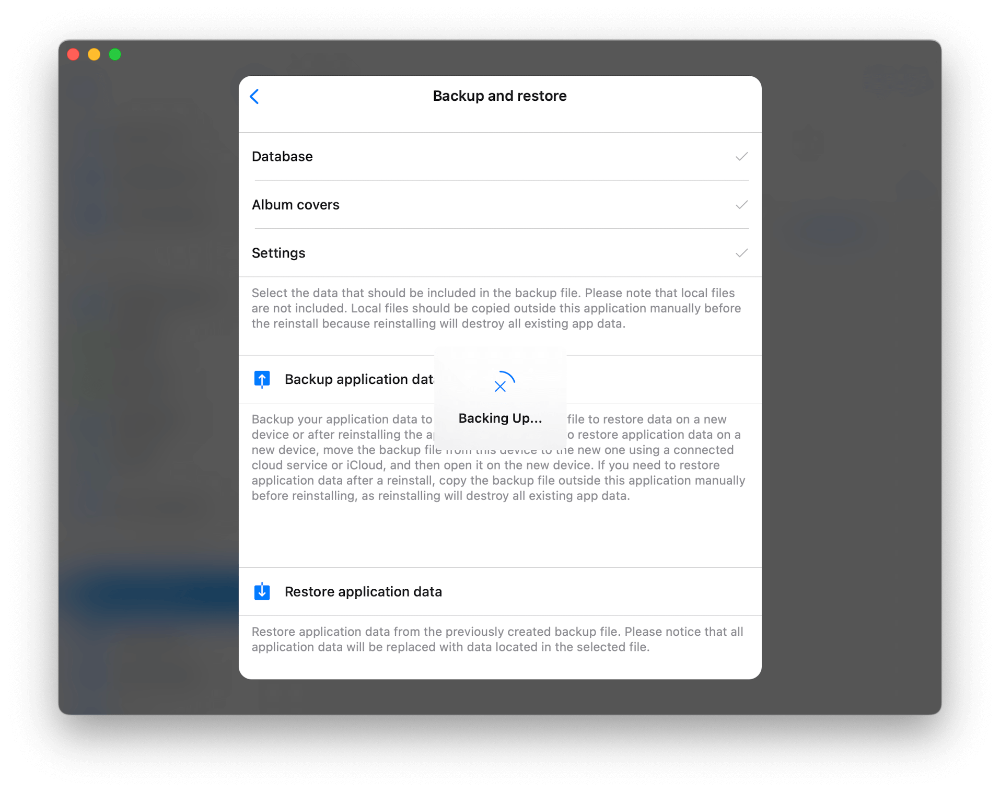</wow-image></div><button aria-label="Expand image" class="u8yqh" data-hook="image-expand-button" type="button"><svg class="rwAk7" viewbox="0 0 19 19" xmlns="http://www.w3.org/2000/svg"><path d="M15.071 8.371V4.585l-4.355 4.356a.2.2 0 0 1-.283 0l-.374-.374a.2.2 0 0 1 0-.283l4.356-4.355h-3.786a.2.2 0 0 1-.2-.2V3.2c0-.11.09-.2.2-.2H16v5.371a.2.2 0 0 1-.2.2h-.529a.2.2 0 0 1-.2-.2zm-6.5 6.9v.529a.2.2 0 0 1-.2.2H3v-5.371c0-.11.09-.2.2-.2h.529c.11 0 .2.09.2.2v3.786l4.355-4.356a.2.2 0 0 1 .283 0l.374.374a.2.2 0 0 1 0 .283L4.585 15.07h3.786c.11 0 .2.09.2.2z" fill="#000" fill-rule="nonzero"></path></svg></button></div></figure></div></div></div><div data-hook="rcv-block13" type="image"></div><div data-breakout="normal"><p class="aMozl Ntato OL17I tTvP1" dir="auto" id="viewer-i5lpy426" style="padding-top:16px;padding-bottom:16px;line-height:max(0.8em, 2em)"><span class="QYU6V"><strong style="font-weight:700"><span style="font-size:16px"><span style="color:#000000;text-decoration:inherit"><span>5. </span></span></span></strong><span style="font-size:16px"><span style="color:#000000;text-decoration:inherit"><span>Once the backup is complete, an info alert will appear. </span></span></span></span></p></div><div data-hook="rcv-block14" type="paragraph"></div><div data-breakout="normal"><div class="cQst3" id="viewer-hldor424"><div class="u65uf xCmu3"><figure class="_51I9R" data-hook="figure-IMAGE"><div class="dVJcp" data-hook="image-viewer"><div class="fTBfd lSGqL vpC6d" data-hook="image-viewer-hldor424" id="hldor424" style="--dim-height:1516;--dim-width:1914;--ricos-image-default-border-color:unset"><wow-image class="undefined gG54d" data-animate-blur="" data-bg-effect-name="" data-has-ssr-src="" data-image-info='{"containerId":"hldor424","displayMode":"fill","isLQIP":true,"isSEOBot":false,"lqipTransition":"blur","encoding":"AVIF","imageData":{"width":1914,"height":1516,"uri":"21260c_cc751d3e710941479102d286d0504a80~mv2.png","name":"","displayMode":"fill"}}' data-motion-part="BG_IMG" id="21260c_cc751d3e710941479102d286d0504a80~mv2.png">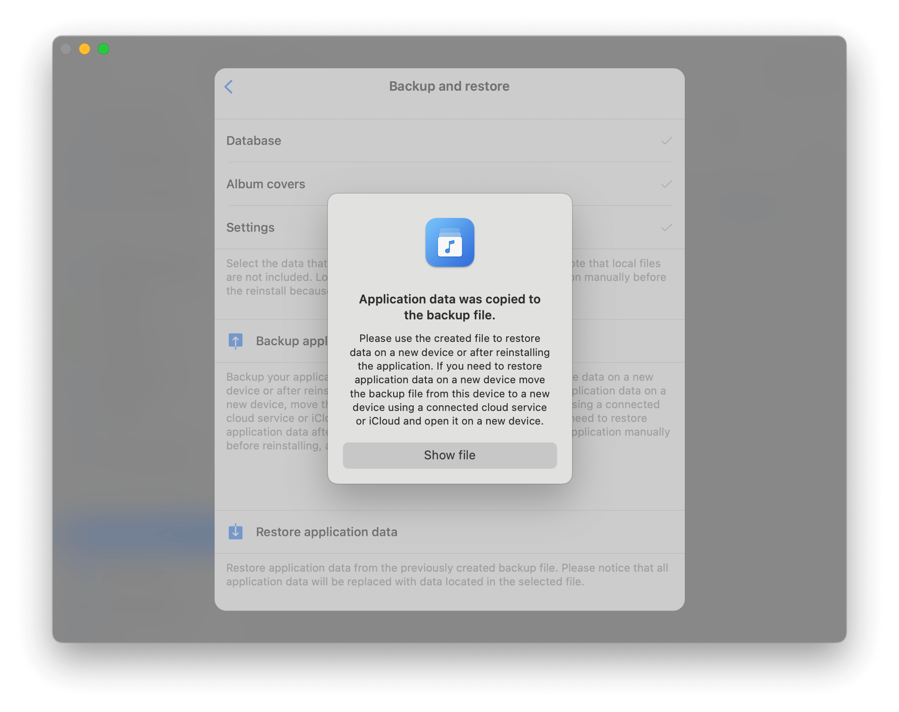</wow-image></div><button aria-label="Expand image" class="u8yqh" data-hook="image-expand-button" type="button"><svg class="rwAk7" viewbox="0 0 19 19" xmlns="http://www.w3.org/2000/svg"><path d="M15.071 8.371V4.585l-4.355 4.356a.2.2 0 0 1-.283 0l-.374-.374a.2.2 0 0 1 0-.283l4.356-4.355h-3.786a.2.2 0 0 1-.2-.2V3.2c0-.11.09-.2.2-.2H16v5.371a.2.2 0 0 1-.2.2h-.529a.2.2 0 0 1-.2-.2zm-6.5 6.9v.529a.2.2 0 0 1-.2.2H3v-5.371c0-.11.09-.2.2-.2h.529c.11 0 .2.09.2.2v3.786l4.355-4.356a.2.2 0 0 1 .283 0l.374.374a.2.2 0 0 1 0 .283L4.585 15.07h3.786c.11 0 .2.09.2.2z" fill="#000" fill-rule="nonzero"></path></svg></button></div></figure></div></div></div><div data-hook="rcv-block15" type="image"></div><div data-breakout="normal"><p class="aMozl Ntato OL17I tTvP1" dir="auto" id="viewer-oazsq433" style="padding-top:16px;padding-bottom:16px;line-height:max(0.8em, 2em)"><span class="QYU6V"><span style="font-size:16px"><span style="color:#000000;text-decoration:inherit"><span>Tap </span></span></span><strong style="font-weight:700"><span style="font-size:16px"><span style="color:#000000;text-decoration:inherit"><span>Show File</span></span></span></strong><span style="font-size:16px"><span style="color:#000000;text-decoration:inherit"><span> to reveal the backup file in the </span></span></span><strong style="font-weight:700"><span style="font-size:16px"><span style="color:#000000;text-decoration:inherit"><span>Documents</span></span></span></strong><span style="font-size:16px"><span style="color:#000000;text-decoration:inherit"><span> directory. Backup files are typically saved in the </span></span></span><strong style="font-weight:700"><span style="font-size:16px"><span style="color:#000000;text-decoration:inherit"><span>Backup</span></span></span></strong><span style="font-size:16px"><span style="color:#000000;text-decoration:inherit"><span> folder.</span></span></span></span></p></div><div data-hook="rcv-block16" type="paragraph"></div><div data-breakout="normal"><div class="cQst3" id="viewer-vowip431"><div class="u65uf xCmu3"><figure class="_51I9R" data-hook="figure-IMAGE"><div class="dVJcp" data-hook="image-viewer"><div class="fTBfd lSGqL vpC6d" data-hook="image-viewer-vowip431" id="vowip431" style="--dim-height:1516;--dim-width:1914;--ricos-image-default-border-color:unset"><wow-image class="undefined gG54d" data-animate-blur="" data-bg-effect-name="" data-has-ssr-src="" data-image-info='{"containerId":"vowip431","displayMode":"fill","isLQIP":true,"isSEOBot":false,"lqipTransition":"blur","encoding":"AVIF","imageData":{"width":1914,"height":1516,"uri":"21260c_d857f23f0ad94ae8851f93baed15aeb1~mv2.png","name":"","displayMode":"fill"}}' data-motion-part="BG_IMG" id="21260c_d857f23f0ad94ae8851f93baed15aeb1~mv2.png"></wow-image></div><button aria-label="Expand image" class="u8yqh" data-hook="image-expand-button" type="button"><svg class="rwAk7" viewbox="0 0 19 19" xmlns="http://www.w3.org/2000/svg"><path d="M15.071 8.371V4.585l-4.355 4.356a.2.2 0 0 1-.283 0l-.374-.374a.2.2 0 0 1 0-.283l4.356-4.355h-3.786a.2.2 0 0 1-.2-.2V3.2c0-.11.09-.2.2-.2H16v5.371a.2.2 0 0 1-.2.2h-.529a.2.2 0 0 1-.2-.2zm-6.5 6.9v.529a.2.2 0 0 1-.2.2H3v-5.371c0-.11.09-.2.2-.2h.529c.11 0 .2.09.2.2v3.786l4.355-4.356a.2.2 0 0 1 .283 0l.374.374a.2.2 0 0 1 0 .283L4.585 15.07h3.786c.11 0 .2.09.2.2z" fill="#000" fill-rule="nonzero"></path></svg></button></div></figure></div></div></div><div data-hook="rcv-block17" type="image"></div><div data-breakout="normal"><p class="aMozl Ntato OL17I tTvP1" dir="auto" id="viewer-ck9dj440" style="padding-top:16px;padding-bottom:16px;line-height:max(0.8em, 2em)"><span class="QYU6V"><strong style="font-weight:700"><span style="font-size:16px"><span style="color:#000000;text-decoration:inherit"><span>### Step 2: Start the Wi-Fi Drive Server</span></span></span></strong></span></p></div><div data-hook="rcv-block18" type="paragraph"></div><div data-breakout="normal"><p class="aMozl Ntato OL17I tTvP1" dir="auto" id="viewer-9m3ae287" style="padding-top:16px;padding-bottom:16px;line-height:max(0.8em, 2em)"><span class="QYU6V"><strong style="font-weight:700"><span style="font-size:16px"><span style="color:#000000;text-decoration:inherit"><span>1. </span></span></span></strong><span style="font-size:16px"><span style="color:#000000;text-decoration:inherit"><span>Go to the </span></span></span><strong style="font-weight:700"><span style="font-size:16px"><span style="color:#000000;text-decoration:inherit"><span>Connections</span></span></span></strong><span style="font-size:16px"><span style="color:#000000;text-decoration:inherit"><span> section in the app.</span></span></span></span></p></div><div data-hook="rcv-block19" type="paragraph"></div><div data-breakout="normal"><p class="aMozl Ntato OL17I tTvP1" dir="auto" id="viewer-o7iqv292" style="padding-top:16px;padding-bottom:16px;line-height:max(0.8em, 2em)"><span class="QYU6V"><strong style="font-weight:700"><span style="font-size:16px"><span style="color:#000000;text-decoration:inherit"><span>2. </span></span></span></strong><span style="font-size:16px"><span style="color:#000000;text-decoration:inherit"><span>Scroll down to </span></span></span><strong style="font-weight:700"><span style="font-size:16px"><span style="color:#000000;text-decoration:inherit"><span>Connect Using Wi-Fi</span></span></span></strong><span style="font-size:16px"><span style="color:#000000;text-decoration:inherit"><span> and tap on it.</span></span></span></span></p></div><div data-hook="rcv-block20" type="paragraph"></div><div data-breakout="normal"><div class="cQst3" id="viewer-0kalj438"><div class="u65uf xCmu3"><figure class="_51I9R" data-hook="figure-IMAGE"><div class="dVJcp" data-hook="image-viewer"><div class="fTBfd lSGqL vpC6d" data-hook="image-viewer-0kalj438" id="0kalj438" style="--dim-height:1516;--dim-width:1914;--ricos-image-default-border-color:unset"><wow-image class="undefined gG54d" data-animate-blur="" data-bg-effect-name="" data-has-ssr-src="" data-image-info='{"containerId":"0kalj438","displayMode":"fill","isLQIP":true,"isSEOBot":false,"lqipTransition":"blur","encoding":"AVIF","imageData":{"width":1914,"height":1516,"uri":"21260c_7241696cb6a54f8d95d15cb9592bbeed~mv2.png","name":"","displayMode":"fill"}}' data-motion-part="BG_IMG" id="21260c_7241696cb6a54f8d95d15cb9592bbeed~mv2.png">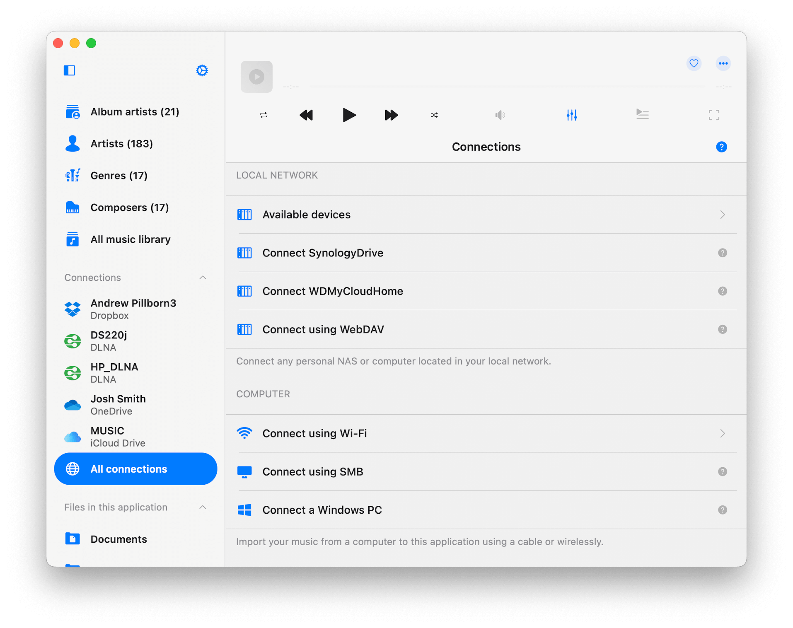</wow-image></div><button aria-label="Expand image" class="u8yqh" data-hook="image-expand-button" type="button"><svg class="rwAk7" viewbox="0 0 19 19" xmlns="http://www.w3.org/2000/svg"><path d="M15.071 8.371V4.585l-4.355 4.356a.2.2 0 0 1-.283 0l-.374-.374a.2.2 0 0 1 0-.283l4.356-4.355h-3.786a.2.2 0 0 1-.2-.2V3.2c0-.11.09-.2.2-.2H16v5.371a.2.2 0 0 1-.2.2h-.529a.2.2 0 0 1-.2-.2zm-6.5 6.9v.529a.2.2 0 0 1-.2.2H3v-5.371c0-.11.09-.2.2-.2h.529c.11 0 .2.09.2.2v3.786l4.355-4.356a.2.2 0 0 1 .283 0l.374.374a.2.2 0 0 1 0 .283L4.585 15.07h3.786c.11 0 .2.09.2.2z" fill="#000" fill-rule="nonzero"></path></svg></button></div></figure></div></div></div><div data-hook="rcv-block21" type="image"></div><div data-breakout="normal"><p class="aMozl Ntato OL17I tTvP1" dir="auto" id="viewer-g0wfd447" style="padding-top:16px;padding-bottom:16px;line-height:max(0.8em, 2em)"><span class="QYU6V"><strong style="font-weight:700"><span style="font-size:16px"><span style="color:#000000;text-decoration:inherit"><span>3. </span></span></span></strong><span style="font-size:16px"><span style="color:#000000;text-decoration:inherit"><span>On the next screen, tap </span></span></span><strong style="font-weight:700"><span style="font-size:16px"><span style="color:#000000;text-decoration:inherit"><span>Start Wi-Fi Drive</span></span></span></strong><span style="font-size:16px"><span style="color:#000000;text-decoration:inherit"><span>.</span></span></span></span></p></div><div data-hook="rcv-block22" type="paragraph"></div><div data-breakout="normal"><p class="aMozl Ntato OL17I tTvP1" dir="auto" id="viewer-h0860302" style="padding-top:16px;padding-bottom:16px;line-height:max(0.8em, 2em)"><span class="QYU6V"><span style="font-size:16px"><span style="color:#000000;text-decoration:inherit"><span>   - Optionally, you can set a login and password for security, but this is unnecessary for home networks.</span></span></span></span></p></div><div data-hook="rcv-block23" type="paragraph"></div><div data-breakout="normal"><p class="aMozl Ntato OL17I tTvP1" dir="auto" id="viewer-gosq5305" style="padding-top:16px;padding-bottom:16px;line-height:max(0.8em, 2em)"><span class="QYU6V"><strong style="font-weight:700"><span style="font-size:16px"><span style="color:#000000;text-decoration:inherit"><span>4. </span></span></span></strong><span style="font-size:16px"><span style="color:#000000;text-decoration:inherit"><span>Once started, you’ll see the available server addresses. This can be used for desktop browsers or WebDAV apps, but in this guide, we’ll proceed directly to the next steps.</span></span></span></span></p></div><div data-hook="rcv-block24" type="paragraph"></div><div data-breakout="normal"><div class="cQst3" id="viewer-3u34m445"><div class="u65uf xCmu3"><figure class="_51I9R" data-hook="figure-IMAGE"><div class="dVJcp" data-hook="image-viewer"><div class="fTBfd lSGqL vpC6d" data-hook="image-viewer-3u34m445" id="3u34m445" style="--dim-height:1516;--dim-width:1914;--ricos-image-default-border-color:unset"><wow-image class="undefined gG54d" data-animate-blur="" data-bg-effect-name="" data-has-ssr-src="" data-image-info='{"containerId":"3u34m445","displayMode":"fill","isLQIP":true,"isSEOBot":false,"lqipTransition":"blur","encoding":"AVIF","imageData":{"width":1914,"height":1516,"uri":"21260c_11ed60c4073640cc9aafda20cec8431c~mv2.png","name":"","displayMode":"fill"}}' data-motion-part="BG_IMG" id="21260c_11ed60c4073640cc9aafda20cec8431c~mv2.png"></wow-image></div><button aria-label="Expand image" class="u8yqh" data-hook="image-expand-button" type="button"><svg class="rwAk7" viewbox="0 0 19 19" xmlns="http://www.w3.org/2000/svg"><path d="M15.071 8.371V4.585l-4.355 4.356a.2.2 0 0 1-.283 0l-.374-.374a.2.2 0 0 1 0-.283l4.356-4.355h-3.786a.2.2 0 0 1-.2-.2V3.2c0-.11.09-.2.2-.2H16v5.371a.2.2 0 0 1-.2.2h-.529a.2.2 0 0 1-.2-.2zm-6.5 6.9v.529a.2.2 0 0 1-.2.2H3v-5.371c0-.11.09-.2.2-.2h.529c.11 0 .2.09.2.2v3.786l4.355-4.356a.2.2 0 0 1 .283 0l.374.374a.2.2 0 0 1 0 .283L4.585 15.07h3.786c.11 0 .2.09.2.2z" fill="#000" fill-rule="nonzero"></path></svg></button></div></figure></div></div></div><div data-hook="rcv-block25" type="image"></div><div data-breakout="normal"><p class="aMozl Ntato OL17I tTvP1" dir="auto" id="viewer-rwtkr454" style="padding-top:16px;padding-bottom:16px;line-height:max(0.8em, 2em)"><span class="QYU6V"><strong style="font-weight:700"><span style="font-size:16px"><span style="color:#000000;text-decoration:inherit"><span>### Step 3: Connect to the First Device from the Second Device</span></span></span></strong></span></p></div><div data-hook="rcv-block26" type="paragraph"></div><div data-breakout="normal"><p class="aMozl Ntato OL17I tTvP1" dir="auto" id="viewer-zx7qa469" style="padding-top:16px;padding-bottom:16px;line-height:max(0.8em, 2em)"><span class="QYU6V"><strong style="font-weight:700"><span style="font-size:16px"><span style="color:#000000;text-decoration:inherit"><span>1. </span></span></span></strong><span style="font-size:16px"><span style="color:#000000;text-decoration:inherit"><span>Open the app on your second device (where you want to transfer the library).</span></span></span></span></p></div><div data-hook="rcv-block27" type="paragraph"></div><div data-breakout="normal"><p class="aMozl Ntato OL17I tTvP1" dir="auto" id="viewer-e5lgx472" style="padding-top:16px;padding-bottom:16px;line-height:max(0.8em, 2em)"><span class="QYU6V"><strong style="font-weight:700"><span style="font-size:16px"><span style="color:#000000;text-decoration:inherit"><span>2. </span></span></span></strong><span style="font-size:16px"><span style="color:#000000;text-decoration:inherit"><span>Ensure both devices are connected to the same Wi-Fi network.</span></span></span></span></p></div><div data-hook="rcv-block28" type="paragraph"></div><div data-breakout="normal"><p class="aMozl Ntato OL17I tTvP1" dir="auto" id="viewer-nto8f475" style="padding-top:16px;padding-bottom:16px;line-height:max(0.8em, 2em)"><span class="QYU6V"><strong style="font-weight:700"><span style="font-size:16px"><span style="color:#000000;text-decoration:inherit"><span>3. </span></span></span></strong><span style="font-size:16px"><span style="color:#000000;text-decoration:inherit"><span>On the second device, open the </span></span></span><strong style="font-weight:700"><span style="font-size:16px"><span style="color:#000000;text-decoration:inherit"><span>Connections</span></span></span></strong><span style="font-size:16px"><span style="color:#000000;text-decoration:inherit"><span> tab and select </span></span></span><strong style="font-weight:700"><span style="font-size:16px"><span style="color:#000000;text-decoration:inherit"><span>Available Devices</span></span></span></strong><span style="font-size:16px"><span style="color:#000000;text-decoration:inherit"><span>.</span></span></span></span></p></div><div data-hook="rcv-block29" type="paragraph"></div><div data-breakout="normal"><p class="aMozl Ntato OL17I tTvP1" dir="auto" id="viewer-jfn4f482" style="padding-top:16px;padding-bottom:16px;line-height:max(0.8em, 2em)"><span class="QYU6V"><strong style="font-weight:700"><span style="font-size:16px"><span style="color:#000000;text-decoration:inherit"><span>4. </span></span></span></strong><span style="font-size:16px"><span style="color:#000000;text-decoration:inherit"><span>You should see a WebDAV connection named </span></span></span><strong style="font-weight:700"><span style="font-size:16px"><span style="color:#000000;text-decoration:inherit"><span>Evermusic</span></span></span></strong><span style="font-size:16px"><span style="color:#000000;text-decoration:inherit"><span> (the server we started on the first device). Tap on it to connect.</span></span></span></span></p></div><div data-hook="rcv-block30" type="paragraph"></div><div data-breakout="normal"><div class="cQst3" id="viewer-d93jy452"><div class="u65uf xCmu3"><figure class="_51I9R" data-hook="figure-IMAGE"><div class="dVJcp" data-hook="image-viewer"><div class="fTBfd lSGqL vpC6d" data-hook="image-viewer-d93jy452" id="d93jy452" style="--dim-height:2064;--dim-width:2752;--ricos-image-default-border-color:unset"><wow-image class="undefined gG54d" data-animate-blur="" data-bg-effect-name="" data-has-ssr-src="" data-image-info='{"containerId":"d93jy452","displayMode":"fill","isLQIP":true,"isSEOBot":false,"lqipTransition":"blur","encoding":"AVIF","imageData":{"width":2752,"height":2064,"uri":"21260c_4d9abdd7dd80409caabfeca89535754d~mv2.png","name":"","displayMode":"fill"}}' data-motion-part="BG_IMG" id="21260c_4d9abdd7dd80409caabfeca89535754d~mv2.png"></wow-image></div><button aria-label="Expand image" class="u8yqh" data-hook="image-expand-button" type="button"><svg class="rwAk7" viewbox="0 0 19 19" xmlns="http://www.w3.org/2000/svg"><path d="M15.071 8.371V4.585l-4.355 4.356a.2.2 0 0 1-.283 0l-.374-.374a.2.2 0 0 1 0-.283l4.356-4.355h-3.786a.2.2 0 0 1-.2-.2V3.2c0-.11.09-.2.2-.2H16v5.371a.2.2 0 0 1-.2.2h-.529a.2.2 0 0 1-.2-.2zm-6.5 6.9v.529a.2.2 0 0 1-.2.2H3v-5.371c0-.11.09-.2.2-.2h.529c.11 0 .2.09.2.2v3.786l4.355-4.356a.2.2 0 0 1 .283 0l.374.374a.2.2 0 0 1 0 .283L4.585 15.07h3.786c.11 0 .2.09.2.2z" fill="#000" fill-rule="nonzero"></path></svg></button></div></figure></div></div></div><div data-hook="rcv-block31" type="image"></div><div data-breakout="normal"><p class="aMozl Ntato OL17I tTvP1" dir="auto" id="viewer-mh885461" style="padding-top:16px;padding-bottom:16px;line-height:max(0.8em, 2em)"><span class="QYU6V"><strong style="font-weight:700"><span style="font-size:16px"><span style="color:#000000;text-decoration:inherit"><span>5. </span></span></span></strong><span style="font-size:16px"><span style="color:#000000;text-decoration:inherit"><span>Once connected, you’ll see all the folders from the first device.</span></span></span></span></p></div><div data-hook="rcv-block32" type="paragraph"></div><div data-breakout="normal"><div class="cQst3" id="viewer-7xqg4459"><div class="u65uf xCmu3"><figure class="_51I9R" data-hook="figure-IMAGE"><div class="dVJcp" data-hook="image-viewer"><div class="fTBfd lSGqL vpC6d" data-hook="image-viewer-7xqg4459" id="7xqg4459" style="--dim-height:2064;--dim-width:2752;--ricos-image-default-border-color:unset"><wow-image class="undefined gG54d" data-animate-blur="" data-bg-effect-name="" data-has-ssr-src="" data-image-info='{"containerId":"7xqg4459","displayMode":"fill","isLQIP":true,"isSEOBot":false,"lqipTransition":"blur","encoding":"AVIF","imageData":{"width":2752,"height":2064,"uri":"21260c_3075c7ee8dfb41f6a2496f8be0673d37~mv2.png","name":"","displayMode":"fill"}}' data-motion-part="BG_IMG" id="21260c_3075c7ee8dfb41f6a2496f8be0673d37~mv2.png">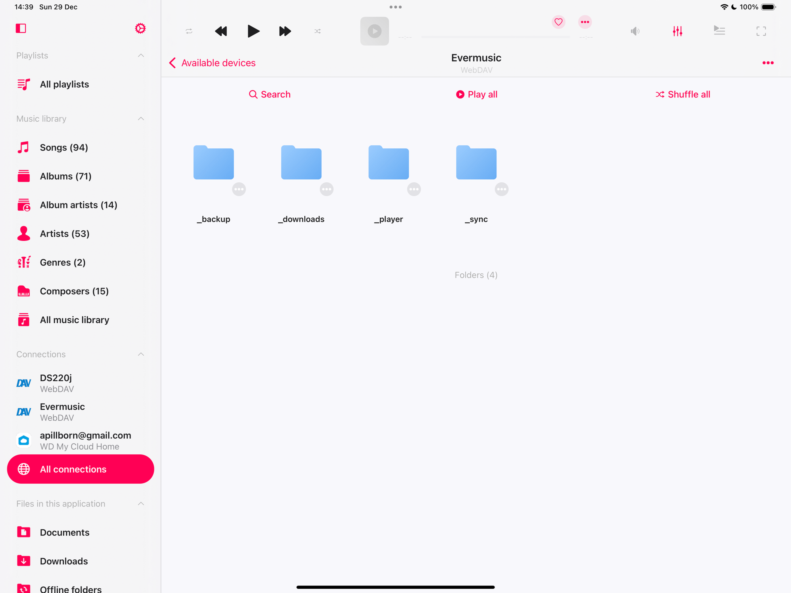</wow-image></div><button aria-label="Expand image" class="u8yqh" data-hook="image-expand-button" type="button"><svg class="rwAk7" viewbox="0 0 19 19" xmlns="http://www.w3.org/2000/svg"><path d="M15.071 8.371V4.585l-4.355 4.356a.2.2 0 0 1-.283 0l-.374-.374a.2.2 0 0 1 0-.283l4.356-4.355h-3.786a.2.2 0 0 1-.2-.2V3.2c0-.11.09-.2.2-.2H16v5.371a.2.2 0 0 1-.2.2h-.529a.2.2 0 0 1-.2-.2zm-6.5 6.9v.529a.2.2 0 0 1-.2.2H3v-5.371c0-.11.09-.2.2-.2h.529c.11 0 .2.09.2.2v3.786l4.355-4.356a.2.2 0 0 1 .283 0l.374.374a.2.2 0 0 1 0 .283L4.585 15.07h3.786c.11 0 .2.09.2.2z" fill="#000" fill-rule="nonzero"></path></svg></button></div></figure></div></div></div><div data-hook="rcv-block33" type="image"></div><div data-breakout="normal"><p class="aMozl Ntato OL17I tTvP1" dir="auto" id="viewer-kz6td468" style="padding-top:16px;padding-bottom:16px;line-height:max(0.8em, 2em)"><span class="QYU6V"><strong style="font-weight:700"><span style="font-size:16px"><span style="color:#000000;text-decoration:inherit"><span>### Step 4: Prepare for File Transfers</span></span></span></strong></span></p></div><div data-hook="rcv-block34" type="paragraph"></div><div data-breakout="normal"><p class="aMozl Ntato OL17I tTvP1" dir="auto" id="viewer-mds8r634" style="padding-top:16px;padding-bottom:16px;line-height:max(0.8em, 2em)"><span class="QYU6V"><strong style="font-weight:700"><span style="font-size:16px"><span style="color:#000000;text-decoration:inherit"><span>1.</span></span></span></strong><span style="font-size:16px"><span style="color:#000000;text-decoration:inherit"><span> On the second device, go to </span></span></span><strong style="font-weight:700"><span style="font-size:16px"><span style="color:#000000;text-decoration:inherit"><span>Settings &gt; File Manager</span></span></span></strong><span style="font-size:16px"><span style="color:#000000;text-decoration:inherit"><span> and enable </span></span></span><strong style="font-weight:700"><span style="font-size:16px"><span style="color:#000000;text-decoration:inherit"><span>Save Downloaded Files To - Ask Every Time</span></span></span></strong><span style="font-size:16px"><span style="color:#000000;text-decoration:inherit"><span>.</span></span></span></span></p></div><div data-hook="rcv-block35" type="paragraph"></div><div data-breakout="normal"><p class="aMozl Ntato OL17I tTvP1" dir="auto" id="viewer-fts1z641" style="padding-top:16px;padding-bottom:16px;line-height:max(0.8em, 2em)"><span class="QYU6V"><span style="font-size:16px"><span style="color:#000000;text-decoration:inherit"><span>   - This ensures you can select the destination folder for each download.</span></span></span></span></p></div><div data-hook="rcv-block36" type="paragraph"></div><div data-breakout="normal"><p class="aMozl Ntato OL17I tTvP1" dir="auto" id="viewer-hh5i2644" style="padding-top:16px;padding-bottom:16px;line-height:max(0.8em, 2em)"><span class="QYU6V"><strong style="font-weight:700"><span style="font-size:16px"><span style="color:#000000;text-decoration:inherit"><span>2. </span></span></span></strong><span style="font-size:16px"><span style="color:#000000;text-decoration:inherit"><span>Return to the </span></span></span><strong style="font-weight:700"><span style="font-size:16px"><span style="color:#000000;text-decoration:inherit"><span>Connections</span></span></span></strong><span style="font-size:16px"><span style="color:#000000;text-decoration:inherit"><span> tab and navigate to the connected WebDAV server.</span></span></span></span></p></div><div data-hook="rcv-block37" type="paragraph"></div><div data-breakout="normal"><div class="cQst3" id="viewer-o1pvr466"><div class="u65uf xCmu3"><figure class="_51I9R" data-hook="figure-IMAGE"><div class="dVJcp" data-hook="image-viewer"><div class="fTBfd lSGqL vpC6d" data-hook="image-viewer-o1pvr466" id="o1pvr466" style="--dim-height:2064;--dim-width:2752;--ricos-image-default-border-color:unset"><wow-image class="undefined gG54d" data-animate-blur="" data-bg-effect-name="" data-has-ssr-src="" data-image-info='{"containerId":"o1pvr466","displayMode":"fill","isLQIP":true,"isSEOBot":false,"lqipTransition":"blur","encoding":"AVIF","imageData":{"width":2752,"height":2064,"uri":"21260c_fb325a9cc68d419389ee76cd19b821d5~mv2.png","name":"","displayMode":"fill"}}' data-motion-part="BG_IMG" id="21260c_fb325a9cc68d419389ee76cd19b821d5~mv2.png"></wow-image></div><button aria-label="Expand image" class="u8yqh" data-hook="image-expand-button" type="button"><svg class="rwAk7" viewbox="0 0 19 19" xmlns="http://www.w3.org/2000/svg"><path d="M15.071 8.371V4.585l-4.355 4.356a.2.2 0 0 1-.283 0l-.374-.374a.2.2 0 0 1 0-.283l4.356-4.355h-3.786a.2.2 0 0 1-.2-.2V3.2c0-.11.09-.2.2-.2H16v5.371a.2.2 0 0 1-.2.2h-.529a.2.2 0 0 1-.2-.2zm-6.5 6.9v.529a.2.2 0 0 1-.2.2H3v-5.371c0-.11.09-.2.2-.2h.529c.11 0 .2.09.2.2v3.786l4.355-4.356a.2.2 0 0 1 .283 0l.374.374a.2.2 0 0 1 0 .283L4.585 15.07h3.786c.11 0 .2.09.2.2z" fill="#000" fill-rule="nonzero"></path></svg></button></div></figure></div></div></div><div data-hook="rcv-block38" type="image"></div><div data-breakout="normal"><p class="aMozl Ntato OL17I tTvP1" dir="auto" id="viewer-6bmi8475" style="padding-top:16px;padding-bottom:16px;line-height:max(0.8em, 2em)"><span class="QYU6V"><strong style="font-weight:700"><span style="font-size:16px"><span style="color:#000000;text-decoration:inherit"><span>### Step 5: Transfer Backup and Music Files</span></span></span></strong></span></p></div><div data-hook="rcv-block39" type="paragraph"></div><div data-breakout="normal"><p class="aMozl Ntato OL17I tTvP1" dir="auto" id="viewer-q0jnk736" style="padding-top:16px;padding-bottom:16px;line-height:max(0.8em, 2em)"><span class="QYU6V"><strong style="font-weight:700"><span style="font-size:16px"><span style="color:#000000;text-decoration:inherit"><span>1. </span></span></span></strong><span style="font-size:16px"><span style="color:#000000;text-decoration:inherit"><span>Open the </span></span></span><strong style="font-weight:700"><span style="font-size:16px"><span style="color:#000000;text-decoration:inherit"><span>Backup</span></span></span></strong><span style="font-size:16px"><span style="color:#000000;text-decoration:inherit"><span> folder on the connected WebDAV server.</span></span></span></span></p></div><div data-hook="rcv-block40" type="paragraph"></div><div data-breakout="normal"><p class="aMozl Ntato OL17I tTvP1" dir="auto" id="viewer-uwyrt741" style="padding-top:16px;padding-bottom:16px;line-height:max(0.8em, 2em)"><span class="QYU6V"><strong style="font-weight:700"><span style="font-size:16px"><span style="color:#000000;text-decoration:inherit"><span>2. </span></span></span></strong><span style="font-size:16px"><span style="color:#000000;text-decoration:inherit"><span>Tap the </span></span></span><strong style="font-weight:700"><span style="font-size:16px"><span style="color:#000000;text-decoration:inherit"><span>More Actions</span></span></span></strong><span style="font-size:16px"><span style="color:#000000;text-decoration:inherit"><span> button (three dots) near the backup file and select </span></span></span><strong style="font-weight:700"><span style="font-size:16px"><span style="color:#000000;text-decoration:inherit"><span>Download</span></span></span></strong><span style="font-size:16px"><span style="color:#000000;text-decoration:inherit"><span>.</span></span></span></span></p></div><div data-hook="rcv-block41" type="paragraph"></div><div data-breakout="normal"><div class="cQst3" id="viewer-bi6se473"><div class="u65uf xCmu3"><figure class="_51I9R" data-hook="figure-IMAGE"><div class="dVJcp" data-hook="image-viewer"><div class="fTBfd lSGqL vpC6d" data-hook="image-viewer-bi6se473" id="bi6se473" style="--dim-height:2064;--dim-width:2752;--ricos-image-default-border-color:unset"><wow-image class="undefined gG54d" data-animate-blur="" data-bg-effect-name="" data-has-ssr-src="" data-image-info='{"containerId":"bi6se473","displayMode":"fill","isLQIP":true,"isSEOBot":false,"lqipTransition":"blur","encoding":"AVIF","imageData":{"width":2752,"height":2064,"uri":"21260c_91254ba6f64649adbc8a759899a8618a~mv2.png","name":"","displayMode":"fill"}}' data-motion-part="BG_IMG" id="21260c_91254ba6f64649adbc8a759899a8618a~mv2.png">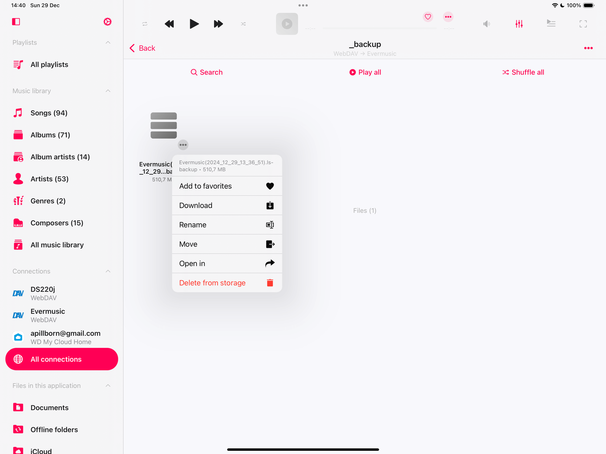</wow-image></div><button aria-label="Expand image" class="u8yqh" data-hook="image-expand-button" type="button"><svg class="rwAk7" viewbox="0 0 19 19" xmlns="http://www.w3.org/2000/svg"><path d="M15.071 8.371V4.585l-4.355 4.356a.2.2 0 0 1-.283 0l-.374-.374a.2.2 0 0 1 0-.283l4.356-4.355h-3.786a.2.2 0 0 1-.2-.2V3.2c0-.11.09-.2.2-.2H16v5.371a.2.2 0 0 1-.2.2h-.529a.2.2 0 0 1-.2-.2zm-6.5 6.9v.529a.2.2 0 0 1-.2.2H3v-5.371c0-.11.09-.2.2-.2h.529c.11 0 .2.09.2.2v3.786l4.355-4.356a.2.2 0 0 1 .283 0l.374.374a.2.2 0 0 1 0 .283L4.585 15.07h3.786c.11 0 .2.09.2.2z" fill="#000" fill-rule="nonzero"></path></svg></button></div></figure></div></div></div><div data-hook="rcv-block42" type="image"></div><div data-breakout="normal"><p class="aMozl Ntato OL17I tTvP1" dir="auto" id="viewer-shbu4482" style="padding-top:16px;padding-bottom:16px;line-height:max(0.8em, 2em)"><span class="QYU6V"><strong style="font-weight:700"><span style="font-size:16px"><span style="color:#000000;text-decoration:inherit"><span>3. </span></span></span></strong><span style="font-size:16px"><span style="color:#000000;text-decoration:inherit"><span>Create a </span></span></span><strong style="font-weight:700"><span style="font-size:16px"><span style="color:#000000;text-decoration:inherit"><span>Backup</span></span></span></strong><span style="font-size:16px"><span style="color:#000000;text-decoration:inherit"><span> folder on the second device to store the downloaded files. Confirm your selection by tapping </span></span></span><strong style="font-weight:700"><span style="font-size:16px"><span style="color:#000000;text-decoration:inherit"><span>Done</span></span></span></strong><span style="font-size:16px"><span style="color:#000000;text-decoration:inherit"><span>.</span></span></span></span></p></div><div data-hook="rcv-block43" type="paragraph"></div><div data-breakout="normal"><div class="cQst3" id="viewer-770qc480"><div class="u65uf xCmu3"><figure class="_51I9R" data-hook="figure-IMAGE"><div class="dVJcp" data-hook="image-viewer"><div class="fTBfd lSGqL vpC6d" data-hook="image-viewer-770qc480" id="770qc480" style="--dim-height:2064;--dim-width:2752;--ricos-image-default-border-color:unset"><wow-image class="undefined gG54d" data-animate-blur="" data-bg-effect-name="" data-has-ssr-src="" data-image-info='{"containerId":"770qc480","displayMode":"fill","isLQIP":true,"isSEOBot":false,"lqipTransition":"blur","encoding":"AVIF","imageData":{"width":2752,"height":2064,"uri":"21260c_ffd617db2ab64bbcb580b70aa94fe3df~mv2.png","name":"","displayMode":"fill"}}' data-motion-part="BG_IMG" id="21260c_ffd617db2ab64bbcb580b70aa94fe3df~mv2.png">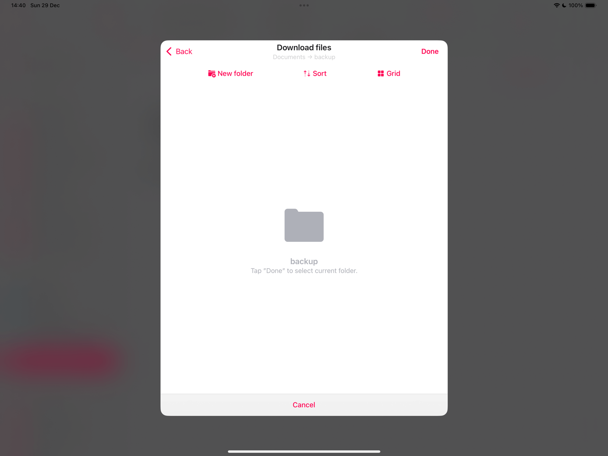</wow-image></div><button aria-label="Expand image" class="u8yqh" data-hook="image-expand-button" type="button"><svg class="rwAk7" viewbox="0 0 19 19" xmlns="http://www.w3.org/2000/svg"><path d="M15.071 8.371V4.585l-4.355 4.356a.2.2 0 0 1-.283 0l-.374-.374a.2.2 0 0 1 0-.283l4.356-4.355h-3.786a.2.2 0 0 1-.2-.2V3.2c0-.11.09-.2.2-.2H16v5.371a.2.2 0 0 1-.2.2h-.529a.2.2 0 0 1-.2-.2zm-6.5 6.9v.529a.2.2 0 0 1-.2.2H3v-5.371c0-.11.09-.2.2-.2h.529c.11 0 .2.09.2.2v3.786l4.355-4.356a.2.2 0 0 1 .283 0l.374.374a.2.2 0 0 1 0 .283L4.585 15.07h3.786c.11 0 .2.09.2.2z" fill="#000" fill-rule="nonzero"></path></svg></button></div></figure></div></div></div><div data-hook="rcv-block44" type="image"></div><div data-breakout="normal"><p class="aMozl Ntato OL17I tTvP1" dir="auto" id="viewer-7lnw2489" style="padding-top:16px;padding-bottom:16px;line-height:max(0.8em, 2em)"><span class="QYU6V"><strong style="font-weight:700"><span style="font-size:16px"><span style="color:#000000;text-decoration:inherit"><span>4.</span></span></span></strong><span style="font-size:16px"><span style="color:#000000;text-decoration:inherit"><span> Transfer any additional music files:</span></span></span></span></p></div><div data-hook="rcv-block45" type="paragraph"></div><div data-breakout="normal"><p class="aMozl Ntato OL17I tTvP1" dir="auto" id="viewer-56wnn956" style="padding-top:16px;padding-bottom:16px;line-height:max(0.8em, 2em)"><span class="QYU6V"><span style="font-size:16px"><span style="color:#000000;text-decoration:inherit"><span>   - Check the </span></span></span><strong style="font-weight:700"><span style="font-size:16px"><span style="color:#000000;text-decoration:inherit"><span>Downloads</span></span></span></strong><span style="font-size:16px"><span style="color:#000000;text-decoration:inherit"><span> folder or other relevant folders on the WebDAV server.</span></span></span></span></p></div><div data-hook="rcv-block46" type="paragraph"></div><div data-breakout="normal"><div class="cQst3" id="viewer-sryev487"><div class="u65uf xCmu3"><figure class="_51I9R" data-hook="figure-IMAGE"><div class="dVJcp" data-hook="image-viewer"><div class="fTBfd lSGqL vpC6d" data-hook="image-viewer-sryev487" id="sryev487" style="--dim-height:2064;--dim-width:2752;--ricos-image-default-border-color:unset"><wow-image class="undefined gG54d" data-animate-blur="" data-bg-effect-name="" data-has-ssr-src="" data-image-info='{"containerId":"sryev487","displayMode":"fill","isLQIP":true,"isSEOBot":false,"lqipTransition":"blur","encoding":"AVIF","imageData":{"width":2752,"height":2064,"uri":"21260c_6536aba207bc4ff98af139f7dc8a2f45~mv2.png","name":"","displayMode":"fill"}}' data-motion-part="BG_IMG" id="21260c_6536aba207bc4ff98af139f7dc8a2f45~mv2.png">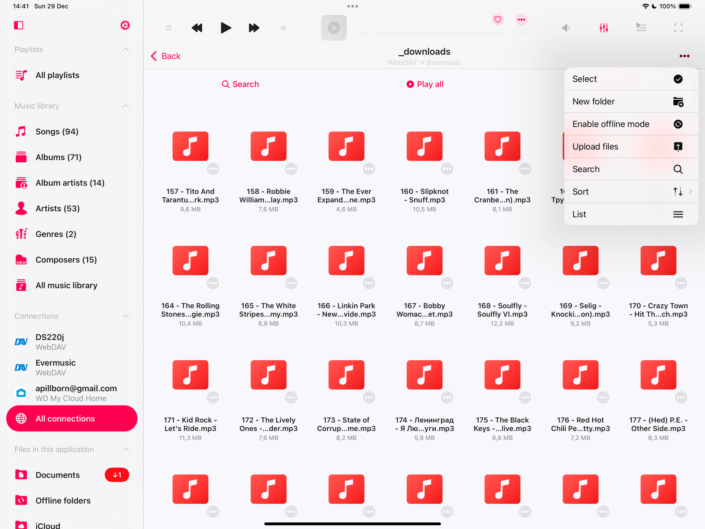</wow-image></div><button aria-label="Expand image" class="u8yqh" data-hook="image-expand-button" type="button"><svg class="rwAk7" viewbox="0 0 19 19" xmlns="http://www.w3.org/2000/svg"><path d="M15.071 8.371V4.585l-4.355 4.356a.2.2 0 0 1-.283 0l-.374-.374a.2.2 0 0 1 0-.283l4.356-4.355h-3.786a.2.2 0 0 1-.2-.2V3.2c0-.11.09-.2.2-.2H16v5.371a.2.2 0 0 1-.2.2h-.529a.2.2 0 0 1-.2-.2zm-6.5 6.9v.529a.2.2 0 0 1-.2.2H3v-5.371c0-.11.09-.2.2-.2h.529c.11 0 .2.09.2.2v3.786l4.355-4.356a.2.2 0 0 1 .283 0l.374.374a.2.2 0 0 1 0 .283L4.585 15.07h3.786c.11 0 .2.09.2.2z" fill="#000" fill-rule="nonzero"></path></svg></button></div></figure></div></div></div><div data-hook="rcv-block47" type="image"></div><div data-breakout="normal"><p class="aMozl Ntato OL17I tTvP1" dir="auto" id="viewer-kpf4a496" style="padding-top:16px;padding-bottom:16px;line-height:max(0.8em, 2em)"><span class="QYU6V"><span style="font-size:16px"><span style="color:#000000;text-decoration:inherit"><span>  - Use the </span></span></span><strong style="font-weight:700"><span style="font-size:16px"><span style="color:#000000;text-decoration:inherit"><span>Select</span></span></span></strong><span style="font-size:16px"><span style="color:#000000;text-decoration:inherit"><span> option to choose files, then tap </span></span></span><strong style="font-weight:700"><span style="font-size:16px"><span style="color:#000000;text-decoration:inherit"><span>More Actions &gt; Download</span></span></span></strong><span style="font-size:16px"><span style="color:#000000;text-decoration:inherit"><span>. Save them in the corresponding folder on the second device to maintain the same directory structure.</span></span></span></span></p></div><div data-hook="rcv-block48" type="paragraph"></div><div data-breakout="normal"><p class="aMozl Ntato OL17I tTvP1" dir="auto" id="viewer-qbr8s18809" style="padding-top:16px;padding-bottom:16px;line-height:max(0.8em, 2em)"><span class="QYU6V"><span style="color:#000000;text-decoration:inherit"><span>The goal is to transfer all files from your first device to your current device, ensuring that the folder structure remains identical. This way, links in your music library and playlists stay intact. Note that local files stored outside the app’s Documents directory on your first device must be transferred separately. Since the app cannot access these files in Wi-Fi Drive mode, you’ll need to use the System Files app for their transfer.</span></span></span></p></div><div data-hook="rcv-block49" type="paragraph"></div><div data-breakout="normal"><div class="cQst3" id="viewer-s1480494"><div class="u65uf xCmu3"><figure class="_51I9R" data-hook="figure-IMAGE"><div class="dVJcp" data-hook="image-viewer"><div class="fTBfd lSGqL vpC6d" data-hook="image-viewer-s1480494" id="s1480494" style="--dim-height:2064;--dim-width:2752;--ricos-image-default-border-color:unset"><wow-image class="undefined gG54d" data-animate-blur="" data-bg-effect-name="" data-has-ssr-src="" data-image-info='{"containerId":"s1480494","displayMode":"fill","isLQIP":true,"isSEOBot":false,"lqipTransition":"blur","encoding":"AVIF","imageData":{"width":2752,"height":2064,"uri":"21260c_352edb4aeb584d53b8646d7bf779de02~mv2.png","name":"","displayMode":"fill"}}' data-motion-part="BG_IMG" id="21260c_352edb4aeb584d53b8646d7bf779de02~mv2.png">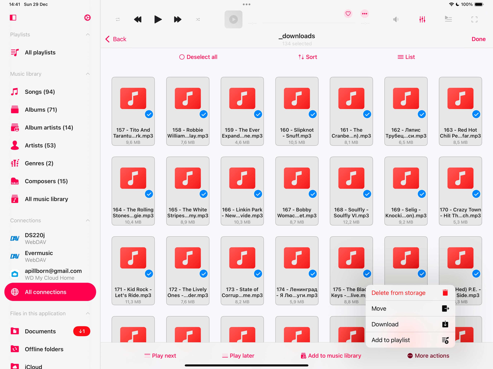</wow-image></div><button aria-label="Expand image" class="u8yqh" data-hook="image-expand-button" type="button"><svg class="rwAk7" viewbox="0 0 19 19" xmlns="http://www.w3.org/2000/svg"><path d="M15.071 8.371V4.585l-4.355 4.356a.2.2 0 0 1-.283 0l-.374-.374a.2.2 0 0 1 0-.283l4.356-4.355h-3.786a.2.2 0 0 1-.2-.2V3.2c0-.11.09-.2.2-.2H16v5.371a.2.2 0 0 1-.2.2h-.529a.2.2 0 0 1-.2-.2zm-6.5 6.9v.529a.2.2 0 0 1-.2.2H3v-5.371c0-.11.09-.2.2-.2h.529c.11 0 .2.09.2.2v3.786l4.355-4.356a.2.2 0 0 1 .283 0l.374.374a.2.2 0 0 1 0 .283L4.585 15.07h3.786c.11 0 .2.09.2.2z" fill="#000" fill-rule="nonzero"></path></svg></button></div></figure></div></div></div><div data-hook="rcv-block50" type="image"></div><div data-breakout="normal"><p class="aMozl Ntato OL17I tTvP1" dir="auto" id="viewer-tom34503" style="padding-top:16px;padding-bottom:16px;line-height:max(0.8em, 2em)"><span class="QYU6V"><strong style="font-weight:700"><span style="font-size:16px"><span style="color:#000000;text-decoration:inherit"><span>### Step 6: Monitor the Transfer Progress</span></span></span></strong></span></p></div><div data-hook="rcv-block51" type="paragraph"></div><div data-breakout="normal"><p class="aMozl Ntato OL17I tTvP1" dir="auto" id="viewer-r5uks1334" style="padding-top:16px;padding-bottom:16px;line-height:max(0.8em, 2em)"><span class="QYU6V"><strong style="font-weight:700"><span style="font-size:16px"><span style="color:#000000;text-decoration:inherit"><span>1. </span></span></span></strong><span style="font-size:16px"><span style="color:#000000;text-decoration:inherit"><span>On the second device, go to the </span></span></span><strong style="font-weight:700"><span style="font-size:16px"><span style="color:#000000;text-decoration:inherit"><span>Local Files</span></span></span></strong><span style="font-size:16px"><span style="color:#000000;text-decoration:inherit"><span> section (or </span></span></span><strong style="font-weight:700"><span style="font-size:16px"><span style="color:#000000;text-decoration:inherit"><span>Downloads</span></span></span></strong><span style="font-size:16px"><span style="color:#000000;text-decoration:inherit"><span> tab on iPad/Mac).</span></span></span></span></p></div><div data-hook="rcv-block52" type="paragraph"></div><div data-breakout="normal"><p class="aMozl Ntato OL17I tTvP1" dir="auto" id="viewer-ev4ad1341" style="padding-top:16px;padding-bottom:16px;line-height:max(0.8em, 2em)"><span class="QYU6V"><strong style="font-weight:700"><span style="font-size:16px"><span style="color:#000000;text-decoration:inherit"><span>2. </span></span></span></strong><span style="font-size:16px"><span style="color:#000000;text-decoration:inherit"><span>Tap the </span></span></span><strong style="font-weight:700"><span style="font-size:16px"><span style="color:#000000;text-decoration:inherit"><span>Transfer Activity</span></span></span></strong><span style="font-size:16px"><span style="color:#000000;text-decoration:inherit"><span> button in the top-left corner to monitor the transfer queue.</span></span></span></span></p></div><div data-hook="rcv-block53" type="paragraph"></div><div data-breakout="normal"><div class="cQst3" id="viewer-4toli501"><div class="u65uf xCmu3"><figure class="_51I9R" data-hook="figure-IMAGE"><div class="dVJcp" data-hook="image-viewer"><div class="fTBfd lSGqL vpC6d" data-hook="image-viewer-4toli501" id="4toli501" style="--dim-height:2064;--dim-width:2752;--ricos-image-default-border-color:unset"><wow-image class="undefined gG54d" data-animate-blur="" data-bg-effect-name="" data-has-ssr-src="" data-image-info='{"containerId":"4toli501","displayMode":"fill","isLQIP":true,"isSEOBot":false,"lqipTransition":"blur","encoding":"AVIF","imageData":{"width":2752,"height":2064,"uri":"21260c_82c35eccb18245fe8e1135ab86532a52~mv2.png","name":"","displayMode":"fill"}}' data-motion-part="BG_IMG" id="21260c_82c35eccb18245fe8e1135ab86532a52~mv2.png"></wow-image></div><button aria-label="Expand image" class="u8yqh" data-hook="image-expand-button" type="button"><svg class="rwAk7" viewbox="0 0 19 19" xmlns="http://www.w3.org/2000/svg"><path d="M15.071 8.371V4.585l-4.355 4.356a.2.2 0 0 1-.283 0l-.374-.374a.2.2 0 0 1 0-.283l4.356-4.355h-3.786a.2.2 0 0 1-.2-.2V3.2c0-.11.09-.2.2-.2H16v5.371a.2.2 0 0 1-.2.2h-.529a.2.2 0 0 1-.2-.2zm-6.5 6.9v.529a.2.2 0 0 1-.2.2H3v-5.371c0-.11.09-.2.2-.2h.529c.11 0 .2.09.2.2v3.786l4.355-4.356a.2.2 0 0 1 .283 0l.374.374a.2.2 0 0 1 0 .283L4.585 15.07h3.786c.11 0 .2.09.2.2z" fill="#000" fill-rule="nonzero"></path></svg></button></div></figure></div></div></div><div data-hook="rcv-block54" type="image"></div><div data-breakout="normal"><p class="aMozl Ntato OL17I tTvP1" dir="auto" id="viewer-vnuwu510" style="padding-top:16px;padding-bottom:16px;line-height:max(0.8em, 2em)"><span class="QYU6V"><strong style="font-weight:700"><span style="font-size:16px"><span style="color:#000000;text-decoration:inherit"><span>### Step 7: Restore Data from Backup</span></span></span></strong></span></p></div><div data-hook="rcv-block55" type="paragraph"></div><div data-breakout="normal"><p class="aMozl Ntato OL17I tTvP1" dir="auto" id="viewer-jcg3b1481" style="padding-top:16px;padding-bottom:16px;line-height:max(0.8em, 2em)"><span class="QYU6V"><strong style="font-weight:700"><span style="font-size:16px"><span style="color:#000000;text-decoration:inherit"><span>1. </span></span></span></strong><span style="font-size:16px"><span style="color:#000000;text-decoration:inherit"><span>Once the backup file and all needed audio files are downloaded to the second device, open the </span></span></span><strong style="font-weight:700"><span style="font-size:16px"><span style="color:#000000;text-decoration:inherit"><span>Backup</span></span></span></strong><span style="font-size:16px"><span style="color:#000000;text-decoration:inherit"><span> folder.</span></span></span></span></p></div><div data-hook="rcv-block56" type="paragraph"></div><div data-breakout="normal"><p class="aMozl Ntato OL17I tTvP1" dir="auto" id="viewer-lmyn61486" style="padding-top:16px;padding-bottom:16px;line-height:max(0.8em, 2em)"><span class="QYU6V"><strong style="font-weight:700"><span style="font-size:16px"><span style="color:#000000;text-decoration:inherit"><span>2. </span></span></span></strong><span style="font-size:16px"><span style="color:#000000;text-decoration:inherit"><span>Tap the backup file, and a confirmation message will appear.</span></span></span></span></p></div><div data-hook="rcv-block57" type="paragraph"></div><div data-breakout="normal"><div class="cQst3" id="viewer-exq9r508"><div class="u65uf xCmu3"><figure class="_51I9R" data-hook="figure-IMAGE"><div class="dVJcp" data-hook="image-viewer"><div class="fTBfd lSGqL vpC6d" data-hook="image-viewer-exq9r508" id="exq9r508" style="--dim-height:2064;--dim-width:2752;--ricos-image-default-border-color:unset"><wow-image class="undefined gG54d" data-animate-blur="" data-bg-effect-name="" data-has-ssr-src="" data-image-info='{"containerId":"exq9r508","displayMode":"fill","isLQIP":true,"isSEOBot":false,"lqipTransition":"blur","encoding":"AVIF","imageData":{"width":2752,"height":2064,"uri":"21260c_480c20fc3d664307b135881d04444fb5~mv2.png","name":"","displayMode":"fill"}}' data-motion-part="BG_IMG" id="21260c_480c20fc3d664307b135881d04444fb5~mv2.png"></wow-image></div><button aria-label="Expand image" class="u8yqh" data-hook="image-expand-button" type="button"><svg class="rwAk7" viewbox="0 0 19 19" xmlns="http://www.w3.org/2000/svg"><path d="M15.071 8.371V4.585l-4.355 4.356a.2.2 0 0 1-.283 0l-.374-.374a.2.2 0 0 1 0-.283l4.356-4.355h-3.786a.2.2 0 0 1-.2-.2V3.2c0-.11.09-.2.2-.2H16v5.371a.2.2 0 0 1-.2.2h-.529a.2.2 0 0 1-.2-.2zm-6.5 6.9v.529a.2.2 0 0 1-.2.2H3v-5.371c0-.11.09-.2.2-.2h.529c.11 0 .2.09.2.2v3.786l4.355-4.356a.2.2 0 0 1 .283 0l.374.374a.2.2 0 0 1 0 .283L4.585 15.07h3.786c.11 0 .2.09.2.2z" fill="#000" fill-rule="nonzero"></path></svg></button></div></figure></div></div></div><div data-hook="rcv-block58" type="image"></div><div data-breakout="normal"><p class="aMozl Ntato OL17I tTvP1" dir="auto" id="viewer-7me8s517" style="padding-top:16px;padding-bottom:16px;line-height:max(0.8em, 2em)"><span class="QYU6V"><span style="font-size:16px"><span style="color:#000000;text-decoration:inherit"><span>   - </span></span></span><strong style="font-weight:700"><span style="font-size:16px"><span style="color:#000000;text-decoration:inherit"><span>Note:</span></span></span></strong><span style="font-size:16px"><span style="color:#000000;text-decoration:inherit"><span> Restoring will replace all current music library data, playlists, settings, and album artwork with the backup data.</span></span></span></span></p></div><div data-hook="rcv-block59" type="paragraph"></div><div data-breakout="normal"><div class="cQst3" id="viewer-housn515"><div class="u65uf xCmu3"><figure class="_51I9R" data-hook="figure-IMAGE"><div class="dVJcp" data-hook="image-viewer"><div class="fTBfd lSGqL vpC6d" data-hook="image-viewer-housn515" id="housn515" style="--dim-height:2064;--dim-width:2752;--ricos-image-default-border-color:unset"><wow-image class="undefined gG54d" data-animate-blur="" data-bg-effect-name="" data-has-ssr-src="" data-image-info='{"containerId":"housn515","displayMode":"fill","isLQIP":true,"isSEOBot":false,"lqipTransition":"blur","encoding":"AVIF","imageData":{"width":2752,"height":2064,"uri":"21260c_469647cffde34ae7a448f7928d1436a9~mv2.png","name":"","displayMode":"fill"}}' data-motion-part="BG_IMG" id="21260c_469647cffde34ae7a448f7928d1436a9~mv2.png">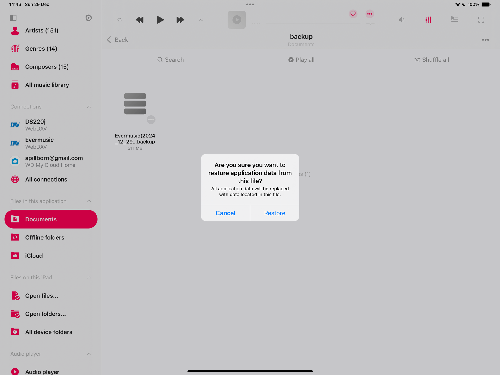</wow-image></div><button aria-label="Expand image" class="u8yqh" data-hook="image-expand-button" type="button"><svg class="rwAk7" viewbox="0 0 19 19" xmlns="http://www.w3.org/2000/svg"><path d="M15.071 8.371V4.585l-4.355 4.356a.2.2 0 0 1-.283 0l-.374-.374a.2.2 0 0 1 0-.283l4.356-4.355h-3.786a.2.2 0 0 1-.2-.2V3.2c0-.11.09-.2.2-.2H16v5.371a.2.2 0 0 1-.2.2h-.529a.2.2 0 0 1-.2-.2zm-6.5 6.9v.529a.2.2 0 0 1-.2.2H3v-5.371c0-.11.09-.2.2-.2h.529c.11 0 .2.09.2.2v3.786l4.355-4.356a.2.2 0 0 1 .283 0l.374.374a.2.2 0 0 1 0 .283L4.585 15.07h3.786c.11 0 .2.09.2.2z" fill="#000" fill-rule="nonzero"></path></svg></button></div></figure></div></div></div><div data-hook="rcv-block60" type="image"></div><div data-breakout="normal"><p class="aMozl Ntato OL17I tTvP1" dir="auto" id="viewer-ycbh3524" style="padding-top:16px;padding-bottom:16px;line-height:max(0.8em, 2em)"><span class="QYU6V"><strong style="font-weight:700"><span style="font-size:16px"><span style="color:#000000;text-decoration:inherit"><span>3. </span></span></span></strong><span style="font-size:16px"><span style="color:#000000;text-decoration:inherit"><span>Tap </span></span></span><strong style="font-weight:700"><span style="font-size:16px"><span style="color:#000000;text-decoration:inherit"><span>Restore</span></span></span></strong><span style="font-size:16px"><span style="color:#000000;text-decoration:inherit"><span> to begin the process.</span></span></span></span></p></div><div data-hook="rcv-block61" type="paragraph"></div><div data-breakout="normal"><div class="cQst3" id="viewer-a2stj522"><div class="u65uf xCmu3"><figure class="_51I9R" data-hook="figure-IMAGE"><div class="dVJcp" data-hook="image-viewer"><div class="fTBfd lSGqL vpC6d" data-hook="image-viewer-a2stj522" id="a2stj522" style="--dim-height:2064;--dim-width:2752;--ricos-image-default-border-color:unset"><wow-image class="undefined gG54d" data-animate-blur="" data-bg-effect-name="" data-has-ssr-src="" data-image-info='{"containerId":"a2stj522","displayMode":"fill","isLQIP":true,"isSEOBot":false,"lqipTransition":"blur","encoding":"AVIF","imageData":{"width":2752,"height":2064,"uri":"21260c_bf4758345a05426aad01268566bc38fb~mv2.png","name":"","displayMode":"fill"}}' data-motion-part="BG_IMG" id="21260c_bf4758345a05426aad01268566bc38fb~mv2.png">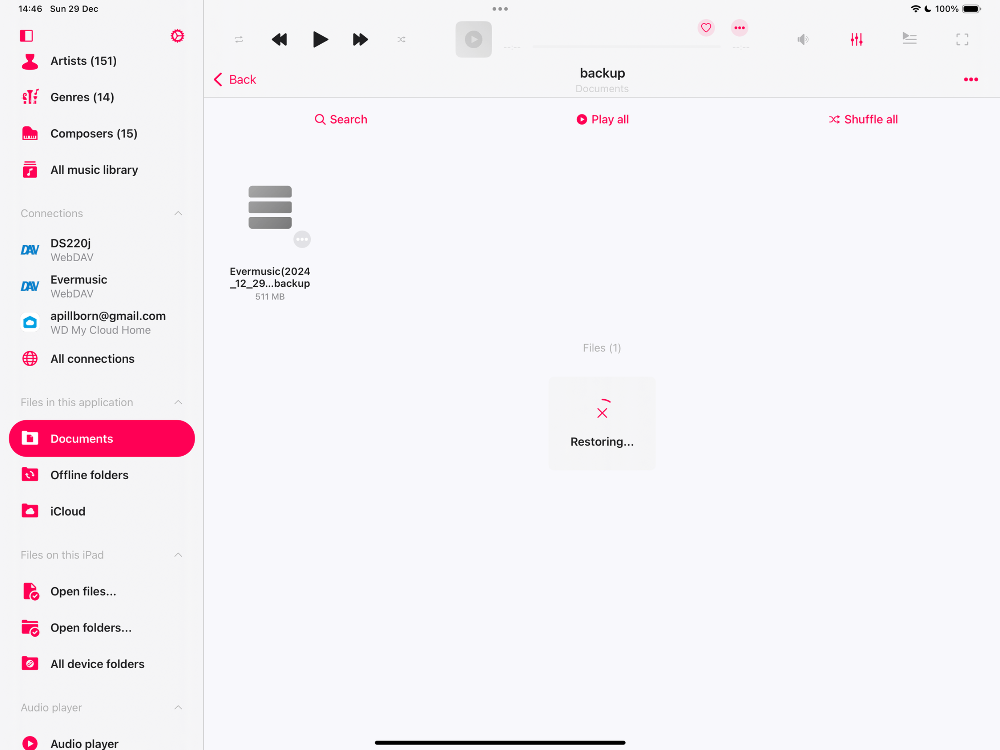</wow-image></div><button aria-label="Expand image" class="u8yqh" data-hook="image-expand-button" type="button"><svg class="rwAk7" viewbox="0 0 19 19" xmlns="http://www.w3.org/2000/svg"><path d="M15.071 8.371V4.585l-4.355 4.356a.2.2 0 0 1-.283 0l-.374-.374a.2.2 0 0 1 0-.283l4.356-4.355h-3.786a.2.2 0 0 1-.2-.2V3.2c0-.11.09-.2.2-.2H16v5.371a.2.2 0 0 1-.2.2h-.529a.2.2 0 0 1-.2-.2zm-6.5 6.9v.529a.2.2 0 0 1-.2.2H3v-5.371c0-.11.09-.2.2-.2h.529c.11 0 .2.09.2.2v3.786l4.355-4.356a.2.2 0 0 1 .283 0l.374.374a.2.2 0 0 1 0 .283L4.585 15.07h3.786c.11 0 .2.09.2.2z" fill="#000" fill-rule="nonzero"></path></svg></button></div></figure></div></div></div><div data-hook="rcv-block62" type="image"></div><div data-breakout="normal"><p class="aMozl Ntato OL17I tTvP1" dir="auto" id="viewer-dj0wh531" style="padding-top:16px;padding-bottom:16px;line-height:max(0.8em, 2em)"><span class="QYU6V"><strong style="font-weight:700"><span style="font-size:16px"><span style="color:#000000;text-decoration:inherit"><span>4. </span></span></span></strong><span style="font-size:16px"><span style="color:#000000;text-decoration:inherit"><span>After the restoration is complete, an alert will confirm success. </span></span></span></span></p></div><div data-hook="rcv-block63" type="paragraph"></div><div data-breakout="normal"><div class="cQst3" id="viewer-7wdgf529"><div class="u65uf xCmu3"><figure class="_51I9R" data-hook="figure-IMAGE"><div class="dVJcp" data-hook="image-viewer"><div class="fTBfd lSGqL vpC6d" data-hook="image-viewer-7wdgf529" id="7wdgf529" style="--dim-height:2064;--dim-width:2752;--ricos-image-default-border-color:unset"><wow-image class="undefined gG54d" data-animate-blur="" data-bg-effect-name="" data-has-ssr-src="" data-image-info='{"containerId":"7wdgf529","displayMode":"fill","isLQIP":true,"isSEOBot":false,"lqipTransition":"blur","encoding":"AVIF","imageData":{"width":2752,"height":2064,"uri":"21260c_c6ca2dc848b64a26a30b511e9e4b79cd~mv2.png","name":"","displayMode":"fill"}}' data-motion-part="BG_IMG" id="21260c_c6ca2dc848b64a26a30b511e9e4b79cd~mv2.png"></wow-image></div><button aria-label="Expand image" class="u8yqh" data-hook="image-expand-button" type="button"><svg class="rwAk7" viewbox="0 0 19 19" xmlns="http://www.w3.org/2000/svg"><path d="M15.071 8.371V4.585l-4.355 4.356a.2.2 0 0 1-.283 0l-.374-.374a.2.2 0 0 1 0-.283l4.356-4.355h-3.786a.2.2 0 0 1-.2-.2V3.2c0-.11.09-.2.2-.2H16v5.371a.2.2 0 0 1-.2.2h-.529a.2.2 0 0 1-.2-.2zm-6.5 6.9v.529a.2.2 0 0 1-.2.2H3v-5.371c0-.11.09-.2.2-.2h.529c.11 0 .2.09.2.2v3.786l4.355-4.356a.2.2 0 0 1 .283 0l.374.374a.2.2 0 0 1 0 .283L4.585 15.07h3.786c.11 0 .2.09.2.2z" fill="#000" fill-rule="nonzero"></path></svg></button></div></figure></div></div></div><div data-hook="rcv-block64" type="image"></div><div data-breakout="normal"><p class="aMozl Ntato OL17I tTvP1" dir="auto" id="viewer-kn9o4538" style="padding-top:16px;padding-bottom:16px;line-height:max(0.8em, 2em)"><span class="QYU6V"><span style="font-size:16px"><span style="color:#000000;text-decoration:inherit"><span>Check the </span></span></span><strong style="font-weight:700"><span style="font-size:16px"><span style="color:#000000;text-decoration:inherit"><span>Playlists</span></span></span></strong><span style="font-size:16px"><span style="color:#000000;text-decoration:inherit"><span> or </span></span></span><strong style="font-weight:700"><span style="font-size:16px"><span style="color:#000000;text-decoration:inherit"><span>Music Library</span></span></span></strong><span style="font-size:16px"><span style="color:#000000;text-decoration:inherit"><span> sections to verify the restoration.</span></span></span></span></p></div><div data-hook="rcv-block65" type="paragraph"></div><div data-breakout="normal"><div class="cQst3" id="viewer-dgwcp536"><div class="u65uf xCmu3"><figure class="_51I9R" data-hook="figure-IMAGE"><div class="dVJcp" data-hook="image-viewer"><div class="fTBfd lSGqL vpC6d" data-hook="image-viewer-dgwcp536" id="dgwcp536" style="--dim-height:2064;--dim-width:2752;--ricos-image-default-border-color:unset"><wow-image class="undefined gG54d" data-animate-blur="" data-bg-effect-name="" data-has-ssr-src="" data-image-info='{"containerId":"dgwcp536","displayMode":"fill","isLQIP":true,"isSEOBot":false,"lqipTransition":"blur","encoding":"AVIF","imageData":{"width":2752,"height":2064,"uri":"21260c_ff3f96fe50f845b392ef24f2de03a794~mv2.png","name":"","displayMode":"fill"}}' data-motion-part="BG_IMG" id="21260c_ff3f96fe50f845b392ef24f2de03a794~mv2.png">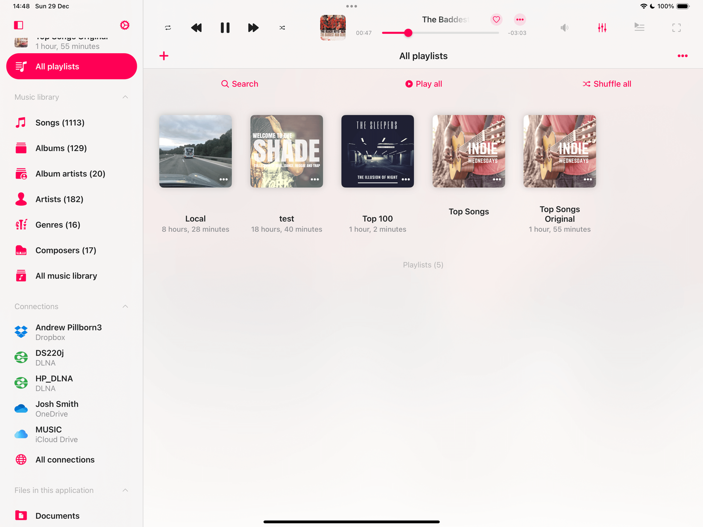</wow-image></div><button aria-label="Expand image" class="u8yqh" data-hook="image-expand-button" type="button"><svg class="rwAk7" viewbox="0 0 19 19" xmlns="http://www.w3.org/2000/svg"><path d="M15.071 8.371V4.585l-4.355 4.356a.2.2 0 0 1-.283 0l-.374-.374a.2.2 0 0 1 0-.283l4.356-4.355h-3.786a.2.2 0 0 1-.2-.2V3.2c0-.11.09-.2.2-.2H16v5.371a.2.2 0 0 1-.2.2h-.529a.2.2 0 0 1-.2-.2zm-6.5 6.9v.529a.2.2 0 0 1-.2.2H3v-5.371c0-.11.09-.2.2-.2h.529c.11 0 .2.09.2.2v3.786l4.355-4.356a.2.2 0 0 1 .283 0l.374.374a.2.2 0 0 1 0 .283L4.585 15.07h3.786c.11 0 .2.09.2.2z" fill="#000" fill-rule="nonzero"></path></svg></button></div></figure></div></div></div><div data-hook="rcv-block66" type="image"></div><div data-breakout="normal"><div class="aMozl Ntato OL17I tTvP1" dir="auto" id="viewer-q0gtw539" style="padding-top:16px;padding-bottom:16px;line-height:max(0.8em, 2em)"><span class="QYU6V"><br role="presentation"/></span></div></div><div data-hook="rcv-block67" type="empty-line"></div><div data-breakout="normal"><p class="aMozl Ntato OL17I tTvP1" dir="auto" id="viewer-pwzzp2888" style="padding-top:16px;padding-bottom:16px;line-height:max(0.8em, 2em)"><span class="QYU6V"><strong style="font-weight:700"><span style="font-size:16px"><span style="color:#000000;text-decoration:inherit"><span>### Step 8: Reindex the Music Library</span></span></span></strong></span></p></div><div data-hook="rcv-block68" type="paragraph"></div><div data-breakout="normal"><p class="aMozl Ntato OL17I tTvP1" dir="auto" id="viewer-bcmd02552" style="padding-top:16px;padding-bottom:16px;line-height:max(0.8em, 2em)"><span class="QYU6V"><strong style="font-weight:700"><span style="font-size:16px"><span style="color:#000000;text-decoration:inherit"><span>1.</span></span></span></strong><span style="font-size:16px"><span style="color:#000000;text-decoration:inherit"><span> For best results, reindex your library to ensure all files are successfully detected.</span></span></span></span></p></div><div data-hook="rcv-block69" type="paragraph"></div><div data-breakout="normal"><p class="aMozl Ntato OL17I tTvP1" dir="auto" id="viewer-9n7o42555" style="padding-top:16px;padding-bottom:16px;line-height:max(0.8em, 2em)"><span class="QYU6V"><strong style="font-weight:700"><span style="font-size:16px"><span style="color:#000000;text-decoration:inherit"><span>2.</span></span></span></strong><span style="font-size:16px"><span style="color:#000000;text-decoration:inherit"><span> Go to </span></span></span><strong style="font-weight:700"><span style="font-size:16px"><span style="color:#000000;text-decoration:inherit"><span>Settings &gt; Music Library &gt; Offline Music Sync</span></span></span></strong><span style="font-size:16px"><span style="color:#000000;text-decoration:inherit"><span> and select </span></span></span><strong style="font-weight:700"><span style="font-size:16px"><span style="color:#000000;text-decoration:inherit"><span>Start Local Folders Scanning</span></span></span></strong><span style="font-size:16px"><span style="color:#000000;text-decoration:inherit"><span>.</span></span></span></span></p></div><div data-hook="rcv-block70" type="paragraph"></div><div data-breakout="normal"><div class="aMozl Ntato OL17I tTvP1" dir="auto" id="viewer-wmuyj2562" style="padding-top:16px;padding-bottom:16px;line-height:max(0.8em, 2em)"><span class="QYU6V"><br role="presentation"/></span></div></div><div data-hook="rcv-block71" type="empty-line"></div><div data-breakout="normal"><p class="aMozl Ntato OL17I tTvP1" dir="auto" id="viewer-2rz2q2563" style="padding-top:16px;padding-bottom:16px;line-height:max(0.8em, 2em)"><span class="QYU6V"><span style="font-size:16px"><span style="color:#000000;text-decoration:inherit"><span>By following these steps, you’ll successfully transfer your music library, playlists, and settings to another device. If you encounter any issues, don’t hesitate to reach out for support.</span></span></span></span></p></div><div data-hook="rcv-block72" type="paragraph"></div></div><div data-hook="rcv-block-last" type="last"></div></div></div></div></div></div></section><footer class="PhCafd B6ltWa" data-hook="post-footer"><div class="PKQ95p"><div class="KVKbzt aQg0ny"><section class="JJ6Vcq"><p class="OY6C7u">Tags:</p><nav aria-label="Tags" data-hook="tag-cloud-root" dir="ltr"><ul class="zmug2R"><li><a class="_u2fqx" href="https://www.everappz.com/blog/tags/musiclibrary" rel="noopener noreferrer">musiclibrary</a></li><li><a class="_u2fqx" href="https://www.everappz.com/blog/tags/transfer" rel="noopener noreferrer">transfer</a></li><li><a class="_u2fqx" href="https://www.everappz.com/blog/tags/wifi" rel="noopener noreferrer">wifi</a></li><li><a class="_u2fqx" href="https://www.everappz.com/blog/tags/backup" rel="noopener noreferrer">backup</a></li><li><a class="_u2fqx" href="https://www.everappz.com/blog/tags/webdav" rel="noopener noreferrer">webdav</a></li><li><a class="_u2fqx" href="https://www.everappz.com/blog/tags/restore" rel="noopener noreferrer">restore</a></li></ul></nav></section><section><ul aria-label="Post categories" class="pRGtWE"><li><a class="Tp7c0d" data-hook="link" href="https://www.everappz.com/blog/categories/how-to">How To</a></li></ul></section><section class="Xyiv4I" data-hook="post-main-actions-desktop"><div class="eFSltK"><div class="Zt1NVN"><div class="dw8bme N8V7Oq" content="" contentclassname="CCJTs7" disabled=""><button aria-label="Share via Facebook" class="qXlEOR" data-hook="share-button__facebook"><svg aria-label="Facebook" class="Eueaet" role="img" viewbox="0 0 19 19" width="19" xmlns="http://www.w3.org/2000/svg"><path d="M8.08865986,17 L8.08865986,10.2073504 L5.7890625,10.2073504 L5.7890625,7.42194226 L8.08865986,7.42194226 L8.08865986,5.08269399 C8.08865986,3.38142605 9.46779813,2.00228778 11.1690661,2.00228778 L13.5731201,2.00228778 L13.5731201,4.50700008 L11.8528988,4.50700008 C11.3123209,4.50700008 10.874068,4.94525303 10.874068,5.48583089 L10.874068,7.42198102 L13.5299033,7.42198102 L13.1628515,10.2073892 L10.874068,10.2073892 L10.874068,17 L8.08865986,17 Z"></path></svg><span class="hV4Sgn"></span></button></div><div class="dw8bme KGq2fc" content="" contentclassname="CCJTs7" disabled=""><button aria-label="Share via X (Twitter)" class="qXlEOR" data-hook="share-button__twitter"><svg aria-label="X" class="Eueaet" height="19" role="img" viewbox="0 0 19 19" width="19" xmlns="http://www.w3.org/2000/svg"><path d="M13.303 10.7714L19.1223 4H17.7433L12.6904 9.87954L8.65471 4H4L10.1028 12.8909L4 19.9918H5.37906L10.715 13.7828L14.977 19.9918H19.6317L13.3027 10.7714H13.303ZM11.4142 12.9692L10.7958 12.0839L5.87595 5.03921H7.9941L11.9645 10.7245L12.5829 11.6098L17.7439 18.9998H15.6258L11.4142 12.9696V12.9692Z"></path></svg><span class="hV4Sgn"></span></button></div><div class="dw8bme _aEGAn" content="" contentclassname="CCJTs7" disabled=""><button aria-label="Share via LinkedIn" class="qXlEOR" data-hook="share-button__linked-in"><svg aria-label="LinkedIn" class="Eueaet" role="img" viewbox="0 0 19 19" width="19" xmlns="http://www.w3.org/2000/svg"><path d="M17,17 L13.89343,17 L13.89343,12.1275733 C13.89343,10.9651251 13.87218,9.47069458 12.2781416,9.47069458 C10.660379,9.47069458 10.4126568,10.7365137 10.4126568,12.0434478 L10.4126568,17 L7.30623235,17 L7.30623235,6.98060885 L10.2883591,6.98060885 L10.2883591,8.3495072 L10.3296946,8.3495072 C10.7445056,7.56190587 11.7585364,6.7312941 13.2709225,6.7312941 C16.418828,6.7312941 17,8.80643844 17,11.5041407 L17,17 Z M3.80289931,5.61098151 C2.80647978,5.61098151 2,4.80165627 2,3.80498046 C2,2.80903365 2.80647978,2 3.80289931,2 C4.79669898,2 5.60434314,2.80903365 5.60434314,3.80498046 C5.60434314,4.80165627 4.79669898,5.61098151 3.80289931,5.61098151 Z M2.24786773,17 L2.24786773,6.98060885 L5.35662096,6.98060885 L5.35662096,17 L2.24786773,17 Z"></path></svg><span class="hV4Sgn"></span></button></div><div class="sng5JnW sz3Ws3M sCJ5I3W dw8bme icAt6f" data-content-hook="popover-content--undefined"><div class="sBfmOvV" data-hook="popover-element"><button aria-label="Share via link" class="qXlEOR" data-hook="share-button__link"><svg aria-hidden="true" class="Eueaet" height="19" viewbox="0 0 19 19" width="19" xmlns="http://www.w3.org/2000/svg"><path d="M10.6000004,11.7622375 L14.2108923,11.7622375 C15.4561791,11.7622375 16.4656836,10.7527331 16.4656836,9.50744629 L16.4656836,9.50744629 L16.4656836,9.50744629 C16.4656836,8.26215946 15.4561791,7.25265503 14.2108923,7.25265503 L10.6000004,7.25265503 L10.6000004,5.84470702 L10.6000004,5.84470702 C10.6000004,5.73425007 10.6895434,5.64470702 10.8000004,5.64470702 L14.3209766,5.64470702 C16.4501961,5.64470702 18.1762695,7.37078048 18.1762695,9.5 C18.1762695,11.6292195 16.4501961,13.355293 14.3209766,13.355293 L10.8000004,13.355293 L10.8000004,13.355293 C10.6895434,13.355293 10.6000004,13.2657499 10.6000004,13.155293 L10.6000004,11.7622375 Z M8.39999962,7.25265503 L4.82047474,7.25265503 C3.57518792,7.25265503 2.56568348,8.26215946 2.56568348,9.50744629 L2.56568348,9.50744629 L2.56568348,9.50744629 C2.56568348,10.7527331 3.57518792,11.7622375 4.82047474,11.7622375 L8.39999962,11.7622375 L8.39999962,13.1578418 C8.39999962,13.2682987 8.31045657,13.3578418 8.19999962,13.3578418 L4.60784179,13.3578418 C2.4772146,13.3578418 0.75,11.6306272 0.75,9.5 C0.75,7.36937281 2.4772146,5.64215821 4.60784179,5.64215821 L8.19999962,5.64215821 L8.19999962,5.64215821 C8.31045657,5.64215821 8.39999962,5.73170126 8.39999962,5.84215821 L8.39999962,7.25265503 Z M6.66568358,8.69999981 L12.2656836,8.69999981 C12.3761405,8.69999981 12.4656836,8.78954286 12.4656836,8.89999981 L12.4656836,10.1499998 C12.4656836,10.2604567 12.3761405,10.3499998 12.2656836,10.3499998 L6.66568358,10.3499998 C6.55522663,10.3499998 6.46568358,10.2604567 6.46568358,10.1499998 L6.46568358,8.89999981 C6.46568358,8.78954286 6.55522663,8.69999981 6.66568358,8.69999981 Z" transform="rotate(-45 9.463 9.5)"></path></svg><span class="hV4Sgn"></span></button></div></div><div class="dw8bme lKAa1v" content="" contentclassname="CCJTs7" disabled=""><button aria-label="Print Post" class="qXlEOR" data-hook="share-button__print"><svg class="Eueaet" height="19" viewbox="0 0 24 24" width="19" xmlns="http://www.w3.org/2000/svg"><path clip-rule="evenodd" d="M18 9H19C19.5523 9 20 9.44772 20 10V17C20 17.5523 19.5523 18 19 18H18V20C18 20.5523 17.5523 21 17 21L7 21C6.44772 21 6 20.5523 6 20L6 18H5C4.44772 18 4 17.5523 4 17V10C4 9.44772 4.44772 9 5 9H6V5C6 4.44772 6.44772 4 7 4H15.7929C15.9255 4 16.0527 4.05268 16.1464 4.14645L17.8536 5.85355C17.9473 5.94732 18 6.0745 18 6.20711V9ZM7 9V5L14 5V7.5C14 7.77614 14.2239 8 14.5 8H17V9H7ZM6 17L6 13L18 13L18 17H19V10H5V17H6ZM17 7V6.41421L15.5858 5H15V7H17ZM17 20L7 20L7 14L17 14L17 20Z" fill-rule="evenodd"></path></svg><span class="hV4Sgn"></span></button></div></div></div><div class="FyFkaC" data-hook="post-main-actions__stats"><div class="TAdeda" data-hook="post-stats"><div class="OiMXGB" style=""><div aria-label="986 views" role="status"><div aria-hidden="true" class="eYTCrB"><svg viewbox="0 0 19 19" width="19" xmlns="http://www.w3.org/2000/svg"><title></title><path d="M18.6514224,10.4604595 C17.3924224,11.9688254 13.9774224,15.4790227 9.46342244,15.5 L9.42442244,15.5 C6.26242244,15.5 3.20842244,13.7938483 0.345422443,10.4264963 C-0.115140814,9.88163847 -0.115140814,9.08439833 0.345422443,8.5395405 C1.60442244,7.03117456 5.01942244,3.52097727 9.53342244,3.5 L9.57342244,3.5 C12.7354224,3.5 15.7894224,5.20615167 18.6524224,8.5735037 C19.1122856,9.11875503 19.1118633,9.91569484 18.6514224,10.4604595 Z M17.8674224,9.2228003 C15.2084224,6.09518855 12.4194224,4.50990594 9.57442244,4.50990594 L9.54042244,4.50990594 C5.46142244,4.52888537 2.30642244,7.78335969 1.14042244,9.18084575 C0.991393136,9.3517953 0.988008897,9.60533857 1.13242244,9.78019645 C3.79142244,12.9078082 6.58142244,14.4920919 9.42542244,14.4920919 L9.46042244,14.4920919 C13.5394224,14.4741114 16.6934224,11.2196371 17.8604224,9.822151 C18.0095734,9.6511131 18.0125381,9.39726759 17.8674224,9.2228003 L17.8674224,9.2228003 Z M9.49942244,13.3932823 C7.35251405,13.3646853 5.63255349,11.6080263 5.65157552,9.46333471 C5.67059754,7.31864313 7.42144652,5.59270141 9.56852513,5.6021069 C11.7156037,5.61151239 13.4512316,7.35272696 13.4514224,9.49750271 C13.4349115,11.6625186 11.6668124,13.4054651 9.49942244,13.3932823 L9.49942244,13.3932823 Z M9.49942244,6.61762258 C7.91092198,6.63961751 6.63891624,7.93990193 6.65354481,9.52676854 C6.66817338,11.1136351 7.96393479,12.3902997 9.55257137,12.3830695 C11.1412079,12.3758393 12.4252698,11.0874333 12.4254224,9.50049946 C12.4127657,7.89797688 11.1037033,6.60820738 9.49942244,6.61762258 L9.49942244,6.61762258 Z"></path></svg>986</div><span class="FyJQDJ">986 views</span></div></div></div><div class="yFrqzV" style=""><button aria-describedby="TPAMultiSection_jvugchim-like-button-a4249e3c-21af-404c-bde1-01daa3dae1dc" aria-label="Like post" class="Kh5HMz"><span aria-live="polite" class="laz8E8" id="TPAMultiSection_jvugchim-like-button-a4249e3c-21af-404c-bde1-01daa3dae1dc">2 likes. Post not marked as liked</span><span aria-hidden="true" class="h7K_lu" data-hook="like-button-with-count__like-count"><span aria-hidden="true" class="FYRNvd like-button-with-count__like-count">2</span><span aria-hidden="true" class="like-button G5Aa3J" data-hook="like-button"><span aria-hidden="true" class="YfFkQX"><span aria-hidden="true" class="zkv91u"></span></span><span aria-hidden="true" class="y5oGWU"><span aria-hidden="true" class="zkv91u"></span></span><span aria-hidden="true" class="Eu1LNI"><span aria-hidden="true" class="zkv91u"></span></span><span aria-hidden="true" class="PxeFnW"><span aria-hidden="true" class="zkv91u"></span></span><span aria-hidden="true" class="X22cAo"></span><svg aria-hidden="true" viewbox="0 0 19 19" width="19" xmlns="http://www.w3.org/2000/svg"><path d="M9.44985848,15.5291774 C9.43911371,15.5362849 9.42782916,15.5449227 9.41715267,15.5553324 L9.44985848,15.5291774 Z M9.44985848,15.5291774 L9.49370677,15.4941118 C9.15422701,15.7147757 10.2318883,15.0314406 10.7297038,14.6971183 C11.5633567,14.1372547 12.3827081,13.5410755 13.1475707,12.9201001 C14.3829188,11.9171478 15.3570936,10.9445466 15.9707237,10.0482572 C16.0768097,9.89330422 16.1713564,9.74160032 16.2509104,9.59910798 C17.0201658,8.17755699 17.2088969,6.78363112 16.7499013,5.65913129 C16.4604017,4.81092573 15.7231445,4.11008901 14.7401472,3.70936139 C13.1379564,3.11266008 11.0475663,3.84092251 9.89976068,5.36430396 L9.50799408,5.8842613 L9.10670536,5.37161711 C7.94954806,3.89335486 6.00516066,3.14638251 4.31830373,3.71958508 C3.36517186,4.00646284 2.65439601,4.72068063 2.23964629,5.77358234 C1.79050315,6.87166888 1.98214559,8.26476279 2.74015555,9.58185512 C2.94777753,9.93163559 3.23221417,10.3090129 3.5869453,10.7089994 C4.17752179,11.3749196 4.94653811,12.0862394 5.85617417,12.8273544 C7.11233096,13.8507929 9.65858244,15.6292133 9.58280954,15.555334 C9.53938013,15.5129899 9.48608859,15.5 9.50042471,15.5 C9.5105974,15.5 9.48275828,15.5074148 9.44985848,15.5291774 Z"></path></svg></span></span></button></div></div></section></div></div></footer></div></article></div></div></div><div class="zp8IQu zp8s_J"><div><section class="oY1ew3" data-hook="recent-posts" style="--blog-pl-common-padding-top:28px;--blog-pl-common-padding-bottom:25px;--blog-pl-slider-padding-top:16px;--blog-pl-slider-padding-bottom:24px;--blog-pl-header-height:34px;--blog-pl-header-margin-bottom:18px;--blog-pl-footer-content-height:18px;--blog-pl-footer-separator-margin:15px;--blog-pl-footer-padding-top:8px;--blog-pl-common-title-margin:11px;--blog-pl-default-title-margin:10px;--blog-pl-slider-title-margin-top:10px;--blog-pl-category-label-margin-bottom:12px;--blog-pl-slider-category-label-margin-bottom:2px"><section><div class="zHLEBV"><article class="qbu2Gh" data-hook="recent-post-list-item"><div class="dkbPQd"><a aria-label="How to Optimize Your App Store Keywords and Metadata — and the Best Free Tool to Help You" class="blog-link-hover-color" data-hook="link" href="https://www.everappz.com/post/how-to-optimize-your-app-store-keywords-and-metadata-and-the-best-free-tool-to-help-you" tabindex="-1"><div class="kkOpHH"><wow-image class="TI1b5D HNM0p2" data-bg-effect-name="" data-has-ssr-src="" data-image-info='{"displayMode":"fill","targetWidth":450,"targetHeight":253,"isSEOBot":false,"encoding":"AVIF","imageData":{"width":1792,"height":1024,"uri":"21260c_73d4385b9c2d45ec950c6208184da134~mv2.jpg","name":"","displayMode":"fill"}}' data-motion-part="BG_IMG undefined" style="--wix-img-max-width:max(1792px, 100%)"></wow-image></div></a><div class="ZnRZP5"><header data-hook="recent-post__title"><a class="hPl9QB" href="https://www.everappz.com/post/how-to-optimize-your-app-store-keywords-and-metadata-and-the-best-free-tool-to-help-you">How to Optimize Your App Store Keywords and Metadata — and the Best Free Tool to Help You</a></header><footer class="LO60EX" data-hook="post-footer"><div class="D6DTyh"><div class="LVcAxq post-stats" data-hook="post-stats"><div class="qcmXZU" style=""><span class="t66ylj" data-hook="view-count"><svg aria-label="102 views" viewbox="0 0 19 19" width="19" xmlns="http://www.w3.org/2000/svg"><title></title><path d="M18.6514224,10.4604595 C17.3924224,11.9688254 13.9774224,15.4790227 9.46342244,15.5 L9.42442244,15.5 C6.26242244,15.5 3.20842244,13.7938483 0.345422443,10.4264963 C-0.115140814,9.88163847 -0.115140814,9.08439833 0.345422443,8.5395405 C1.60442244,7.03117456 5.01942244,3.52097727 9.53342244,3.5 L9.57342244,3.5 C12.7354224,3.5 15.7894224,5.20615167 18.6524224,8.5735037 C19.1122856,9.11875503 19.1118633,9.91569484 18.6514224,10.4604595 Z M17.8674224,9.2228003 C15.2084224,6.09518855 12.4194224,4.50990594 9.57442244,4.50990594 L9.54042244,4.50990594 C5.46142244,4.52888537 2.30642244,7.78335969 1.14042244,9.18084575 C0.991393136,9.3517953 0.988008897,9.60533857 1.13242244,9.78019645 C3.79142244,12.9078082 6.58142244,14.4920919 9.42542244,14.4920919 L9.46042244,14.4920919 C13.5394224,14.4741114 16.6934224,11.2196371 17.8604224,9.822151 C18.0095734,9.6511131 18.0125381,9.39726759 17.8674224,9.2228003 L17.8674224,9.2228003 Z M9.49942244,13.3932823 C7.35251405,13.3646853 5.63255349,11.6080263 5.65157552,9.46333471 C5.67059754,7.31864313 7.42144652,5.59270141 9.56852513,5.6021069 C11.7156037,5.61151239 13.4512316,7.35272696 13.4514224,9.49750271 C13.4349115,11.6625186 11.6668124,13.4054651 9.49942244,13.3932823 L9.49942244,13.3932823 Z M9.49942244,6.61762258 C7.91092198,6.63961751 6.63891624,7.93990193 6.65354481,9.52676854 C6.66817338,11.1136351 7.96393479,12.3902997 9.55257137,12.3830695 C11.1412079,12.3758393 12.4252698,11.0874333 12.4254224,9.50049946 C12.4127657,7.89797688 11.1037033,6.60820738 9.49942244,6.61762258 L9.49942244,6.61762258 Z"></path></svg><span class="eYQJQu">102</span></span></div></div></div><div class="wChIrD" style=""><button aria-describedby="TPAMultiSection_jvugchim-like-button-7ed37e85-c72a-49df-acac-2838d0993091" aria-label="Like post" class="Kh5HMz"><span aria-live="polite" class="laz8E8" id="TPAMultiSection_jvugchim-like-button-7ed37e85-c72a-49df-acac-2838d0993091">1 like. Post not marked as liked</span><span aria-hidden="true" class="h7K_lu" data-hook="like-button-with-count__like-count"><span aria-hidden="true" class="FYRNvd like-button-with-count__like-count">1</span><span aria-hidden="true" class="like-button G5Aa3J" data-hook="like-button"><span aria-hidden="true" class="YfFkQX"><span aria-hidden="true" class="zkv91u"></span></span><span aria-hidden="true" class="y5oGWU"><span aria-hidden="true" class="zkv91u"></span></span><span aria-hidden="true" class="Eu1LNI"><span aria-hidden="true" class="zkv91u"></span></span><span aria-hidden="true" class="PxeFnW"><span aria-hidden="true" class="zkv91u"></span></span><span aria-hidden="true" class="X22cAo"></span><svg aria-hidden="true" viewbox="0 0 19 19" width="19" xmlns="http://www.w3.org/2000/svg"><path d="M9.44985848,15.5291774 C9.43911371,15.5362849 9.42782916,15.5449227 9.41715267,15.5553324 L9.44985848,15.5291774 Z M9.44985848,15.5291774 L9.49370677,15.4941118 C9.15422701,15.7147757 10.2318883,15.0314406 10.7297038,14.6971183 C11.5633567,14.1372547 12.3827081,13.5410755 13.1475707,12.9201001 C14.3829188,11.9171478 15.3570936,10.9445466 15.9707237,10.0482572 C16.0768097,9.89330422 16.1713564,9.74160032 16.2509104,9.59910798 C17.0201658,8.17755699 17.2088969,6.78363112 16.7499013,5.65913129 C16.4604017,4.81092573 15.7231445,4.11008901 14.7401472,3.70936139 C13.1379564,3.11266008 11.0475663,3.84092251 9.89976068,5.36430396 L9.50799408,5.8842613 L9.10670536,5.37161711 C7.94954806,3.89335486 6.00516066,3.14638251 4.31830373,3.71958508 C3.36517186,4.00646284 2.65439601,4.72068063 2.23964629,5.77358234 C1.79050315,6.87166888 1.98214559,8.26476279 2.74015555,9.58185512 C2.94777753,9.93163559 3.23221417,10.3090129 3.5869453,10.7089994 C4.17752179,11.3749196 4.94653811,12.0862394 5.85617417,12.8273544 C7.11233096,13.8507929 9.65858244,15.6292133 9.58280954,15.555334 C9.53938013,15.5129899 9.48608859,15.5 9.50042471,15.5 C9.5105974,15.5 9.48275828,15.5074148 9.44985848,15.5291774 Z"></path></svg></span></span></button></div></footer></div></div></article><article class="qbu2Gh" data-hook="recent-post-list-item"><div class="dkbPQd"><a aria-label="How to Archive (ZIP) Playlists, Albums, Artists, and Genres in Evermusic &amp; Flacbox  and Transfer to Another Device" class="blog-link-hover-color" data-hook="link" href="https://www.everappz.com/post/how-to-archive-zip-playlists-albums-artists-and-genres-in-evermusic-flacbox-and-transfer-to" tabindex="-1"><div class="kkOpHH"><wow-image class="TI1b5D HNM0p2" data-bg-effect-name="" data-has-ssr-src="" data-image-info='{"displayMode":"fill","targetWidth":450,"targetHeight":253,"isSEOBot":false,"encoding":"AVIF","imageData":{"width":1792,"height":1024,"uri":"21260c_a44074270cbe492e8743b7dc627e7045~mv2.jpg","name":"","displayMode":"fill"}}' data-motion-part="BG_IMG undefined" style="--wix-img-max-width:max(1792px, 100%)"></wow-image></div></a><div class="ZnRZP5"><header data-hook="recent-post__title"><a class="hPl9QB" href="https://www.everappz.com/post/how-to-archive-zip-playlists-albums-artists-and-genres-in-evermusic-flacbox-and-transfer-to">How to Archive (ZIP) Playlists, Albums, Artists, and Genres in Evermusic &amp; Flacbox  and Transfer to Another Device</a></header><footer class="LO60EX" data-hook="post-footer"><div class="D6DTyh"><div class="LVcAxq post-stats" data-hook="post-stats"><div class="qcmXZU" style=""><span class="t66ylj" data-hook="view-count"><svg aria-label="192 views" viewbox="0 0 19 19" width="19" xmlns="http://www.w3.org/2000/svg"><title></title><path d="M18.6514224,10.4604595 C17.3924224,11.9688254 13.9774224,15.4790227 9.46342244,15.5 L9.42442244,15.5 C6.26242244,15.5 3.20842244,13.7938483 0.345422443,10.4264963 C-0.115140814,9.88163847 -0.115140814,9.08439833 0.345422443,8.5395405 C1.60442244,7.03117456 5.01942244,3.52097727 9.53342244,3.5 L9.57342244,3.5 C12.7354224,3.5 15.7894224,5.20615167 18.6524224,8.5735037 C19.1122856,9.11875503 19.1118633,9.91569484 18.6514224,10.4604595 Z M17.8674224,9.2228003 C15.2084224,6.09518855 12.4194224,4.50990594 9.57442244,4.50990594 L9.54042244,4.50990594 C5.46142244,4.52888537 2.30642244,7.78335969 1.14042244,9.18084575 C0.991393136,9.3517953 0.988008897,9.60533857 1.13242244,9.78019645 C3.79142244,12.9078082 6.58142244,14.4920919 9.42542244,14.4920919 L9.46042244,14.4920919 C13.5394224,14.4741114 16.6934224,11.2196371 17.8604224,9.822151 C18.0095734,9.6511131 18.0125381,9.39726759 17.8674224,9.2228003 L17.8674224,9.2228003 Z M9.49942244,13.3932823 C7.35251405,13.3646853 5.63255349,11.6080263 5.65157552,9.46333471 C5.67059754,7.31864313 7.42144652,5.59270141 9.56852513,5.6021069 C11.7156037,5.61151239 13.4512316,7.35272696 13.4514224,9.49750271 C13.4349115,11.6625186 11.6668124,13.4054651 9.49942244,13.3932823 L9.49942244,13.3932823 Z M9.49942244,6.61762258 C7.91092198,6.63961751 6.63891624,7.93990193 6.65354481,9.52676854 C6.66817338,11.1136351 7.96393479,12.3902997 9.55257137,12.3830695 C11.1412079,12.3758393 12.4252698,11.0874333 12.4254224,9.50049946 C12.4127657,7.89797688 11.1037033,6.60820738 9.49942244,6.61762258 L9.49942244,6.61762258 Z"></path></svg><span class="eYQJQu">192</span></span></div></div></div><div class="wChIrD" style=""><button aria-describedby="TPAMultiSection_jvugchim-like-button-9e8b0c00-39e8-40db-9a9b-a869831a1793" aria-label="Like post" class="Kh5HMz"><span aria-live="polite" class="laz8E8" id="TPAMultiSection_jvugchim-like-button-9e8b0c00-39e8-40db-9a9b-a869831a1793">1 like. Post not marked as liked</span><span aria-hidden="true" class="h7K_lu" data-hook="like-button-with-count__like-count"><span aria-hidden="true" class="FYRNvd like-button-with-count__like-count">1</span><span aria-hidden="true" class="like-button G5Aa3J" data-hook="like-button"><span aria-hidden="true" class="YfFkQX"><span aria-hidden="true" class="zkv91u"></span></span><span aria-hidden="true" class="y5oGWU"><span aria-hidden="true" class="zkv91u"></span></span><span aria-hidden="true" class="Eu1LNI"><span aria-hidden="true" class="zkv91u"></span></span><span aria-hidden="true" class="PxeFnW"><span aria-hidden="true" class="zkv91u"></span></span><span aria-hidden="true" class="X22cAo"></span><svg aria-hidden="true" viewbox="0 0 19 19" width="19" xmlns="http://www.w3.org/2000/svg"><path d="M9.44985848,15.5291774 C9.43911371,15.5362849 9.42782916,15.5449227 9.41715267,15.5553324 L9.44985848,15.5291774 Z M9.44985848,15.5291774 L9.49370677,15.4941118 C9.15422701,15.7147757 10.2318883,15.0314406 10.7297038,14.6971183 C11.5633567,14.1372547 12.3827081,13.5410755 13.1475707,12.9201001 C14.3829188,11.9171478 15.3570936,10.9445466 15.9707237,10.0482572 C16.0768097,9.89330422 16.1713564,9.74160032 16.2509104,9.59910798 C17.0201658,8.17755699 17.2088969,6.78363112 16.7499013,5.65913129 C16.4604017,4.81092573 15.7231445,4.11008901 14.7401472,3.70936139 C13.1379564,3.11266008 11.0475663,3.84092251 9.89976068,5.36430396 L9.50799408,5.8842613 L9.10670536,5.37161711 C7.94954806,3.89335486 6.00516066,3.14638251 4.31830373,3.71958508 C3.36517186,4.00646284 2.65439601,4.72068063 2.23964629,5.77358234 C1.79050315,6.87166888 1.98214559,8.26476279 2.74015555,9.58185512 C2.94777753,9.93163559 3.23221417,10.3090129 3.5869453,10.7089994 C4.17752179,11.3749196 4.94653811,12.0862394 5.85617417,12.8273544 C7.11233096,13.8507929 9.65858244,15.6292133 9.58280954,15.555334 C9.53938013,15.5129899 9.48608859,15.5 9.50042471,15.5 C9.5105974,15.5 9.48275828,15.5074148 9.44985848,15.5291774 Z"></path></svg></span></span></button></div></footer></div></div></article><article class="qbu2Gh" data-hook="recent-post-list-item"><div class="dkbPQd"><a aria-label="How to Scrobble Your Music History from Evermusic or Flacbox to Last.fm  " class="blog-link-hover-color" data-hook="link" href="https://www.everappz.com/post/how-to-scrobble-your-music-history-from-evermusic-or-flacbox-to-last-fm" tabindex="-1"><div class="kkOpHH"><wow-image class="TI1b5D HNM0p2" data-bg-effect-name="" data-has-ssr-src="" data-image-info='{"displayMode":"fill","targetWidth":450,"targetHeight":253,"isSEOBot":false,"encoding":"AVIF","imageData":{"width":1792,"height":1024,"uri":"21260c_14ec3bf796db49b4ba436e49142cb9f6~mv2.jpg","name":"","displayMode":"fill"}}' data-motion-part="BG_IMG undefined" style="--wix-img-max-width:max(1792px, 100%)"></wow-image></div></a><div class="ZnRZP5"><header data-hook="recent-post__title"><a class="hPl9QB" href="https://www.everappz.com/post/how-to-scrobble-your-music-history-from-evermusic-or-flacbox-to-last-fm">How to Scrobble Your Music History from Evermusic or Flacbox to Last.fm  </a></header><footer class="LO60EX" data-hook="post-footer"><div class="D6DTyh"><div class="LVcAxq post-stats" data-hook="post-stats"><div class="qcmXZU" style=""><span class="t66ylj" data-hook="view-count"><svg aria-label="1,000 views" viewbox="0 0 19 19" width="19" xmlns="http://www.w3.org/2000/svg"><title></title><path d="M18.6514224,10.4604595 C17.3924224,11.9688254 13.9774224,15.4790227 9.46342244,15.5 L9.42442244,15.5 C6.26242244,15.5 3.20842244,13.7938483 0.345422443,10.4264963 C-0.115140814,9.88163847 -0.115140814,9.08439833 0.345422443,8.5395405 C1.60442244,7.03117456 5.01942244,3.52097727 9.53342244,3.5 L9.57342244,3.5 C12.7354224,3.5 15.7894224,5.20615167 18.6524224,8.5735037 C19.1122856,9.11875503 19.1118633,9.91569484 18.6514224,10.4604595 Z M17.8674224,9.2228003 C15.2084224,6.09518855 12.4194224,4.50990594 9.57442244,4.50990594 L9.54042244,4.50990594 C5.46142244,4.52888537 2.30642244,7.78335969 1.14042244,9.18084575 C0.991393136,9.3517953 0.988008897,9.60533857 1.13242244,9.78019645 C3.79142244,12.9078082 6.58142244,14.4920919 9.42542244,14.4920919 L9.46042244,14.4920919 C13.5394224,14.4741114 16.6934224,11.2196371 17.8604224,9.822151 C18.0095734,9.6511131 18.0125381,9.39726759 17.8674224,9.2228003 L17.8674224,9.2228003 Z M9.49942244,13.3932823 C7.35251405,13.3646853 5.63255349,11.6080263 5.65157552,9.46333471 C5.67059754,7.31864313 7.42144652,5.59270141 9.56852513,5.6021069 C11.7156037,5.61151239 13.4512316,7.35272696 13.4514224,9.49750271 C13.4349115,11.6625186 11.6668124,13.4054651 9.49942244,13.3932823 L9.49942244,13.3932823 Z M9.49942244,6.61762258 C7.91092198,6.63961751 6.63891624,7.93990193 6.65354481,9.52676854 C6.66817338,11.1136351 7.96393479,12.3902997 9.55257137,12.3830695 C11.1412079,12.3758393 12.4252698,11.0874333 12.4254224,9.50049946 C12.4127657,7.89797688 11.1037033,6.60820738 9.49942244,6.61762258 L9.49942244,6.61762258 Z"></path></svg><span class="eYQJQu">1,000</span></span></div></div></div><div class="wChIrD" style=""><button aria-describedby="TPAMultiSection_jvugchim-like-button-7920562c-8039-4948-9f03-6baa161bb775" aria-label="Like post" class="Kh5HMz"><span aria-live="polite" class="laz8E8" id="TPAMultiSection_jvugchim-like-button-7920562c-8039-4948-9f03-6baa161bb775">1 like. Post not marked as liked</span><span aria-hidden="true" class="h7K_lu" data-hook="like-button-with-count__like-count"><span aria-hidden="true" class="FYRNvd like-button-with-count__like-count">1</span><span aria-hidden="true" class="like-button G5Aa3J" data-hook="like-button"><span aria-hidden="true" class="YfFkQX"><span aria-hidden="true" class="zkv91u"></span></span><span aria-hidden="true" class="y5oGWU"><span aria-hidden="true" class="zkv91u"></span></span><span aria-hidden="true" class="Eu1LNI"><span aria-hidden="true" class="zkv91u"></span></span><span aria-hidden="true" class="PxeFnW"><span aria-hidden="true" class="zkv91u"></span></span><span aria-hidden="true" class="X22cAo"></span><svg aria-hidden="true" viewbox="0 0 19 19" width="19" xmlns="http://www.w3.org/2000/svg"><path d="M9.44985848,15.5291774 C9.43911371,15.5362849 9.42782916,15.5449227 9.41715267,15.5553324 L9.44985848,15.5291774 Z M9.44985848,15.5291774 L9.49370677,15.4941118 C9.15422701,15.7147757 10.2318883,15.0314406 10.7297038,14.6971183 C11.5633567,14.1372547 12.3827081,13.5410755 13.1475707,12.9201001 C14.3829188,11.9171478 15.3570936,10.9445466 15.9707237,10.0482572 C16.0768097,9.89330422 16.1713564,9.74160032 16.2509104,9.59910798 C17.0201658,8.17755699 17.2088969,6.78363112 16.7499013,5.65913129 C16.4604017,4.81092573 15.7231445,4.11008901 14.7401472,3.70936139 C13.1379564,3.11266008 11.0475663,3.84092251 9.89976068,5.36430396 L9.50799408,5.8842613 L9.10670536,5.37161711 C7.94954806,3.89335486 6.00516066,3.14638251 4.31830373,3.71958508 C3.36517186,4.00646284 2.65439601,4.72068063 2.23964629,5.77358234 C1.79050315,6.87166888 1.98214559,8.26476279 2.74015555,9.58185512 C2.94777753,9.93163559 3.23221417,10.3090129 3.5869453,10.7089994 C4.17752179,11.3749196 4.94653811,12.0862394 5.85617417,12.8273544 C7.11233096,13.8507929 9.65858244,15.6292133 9.58280954,15.555334 C9.53938013,15.5129899 9.48608859,15.5 9.50042471,15.5 C9.5105974,15.5 9.48275828,15.5074148 9.44985848,15.5291774 Z"></path></svg></span></span></button></div></footer></div></div></article></div></section></section></div></div></div></div></div>